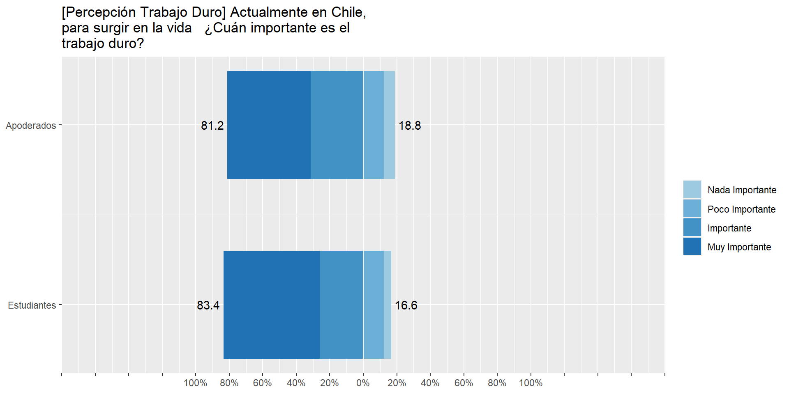
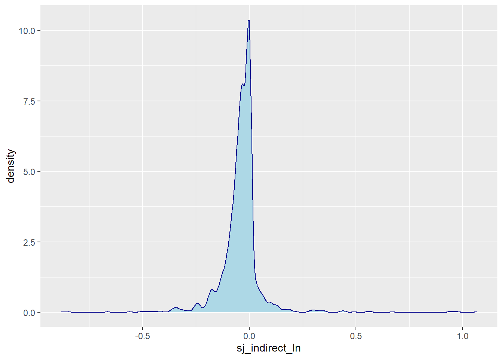
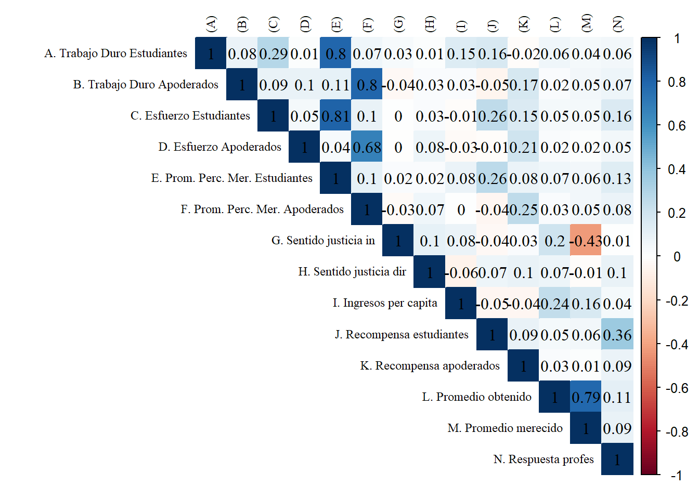
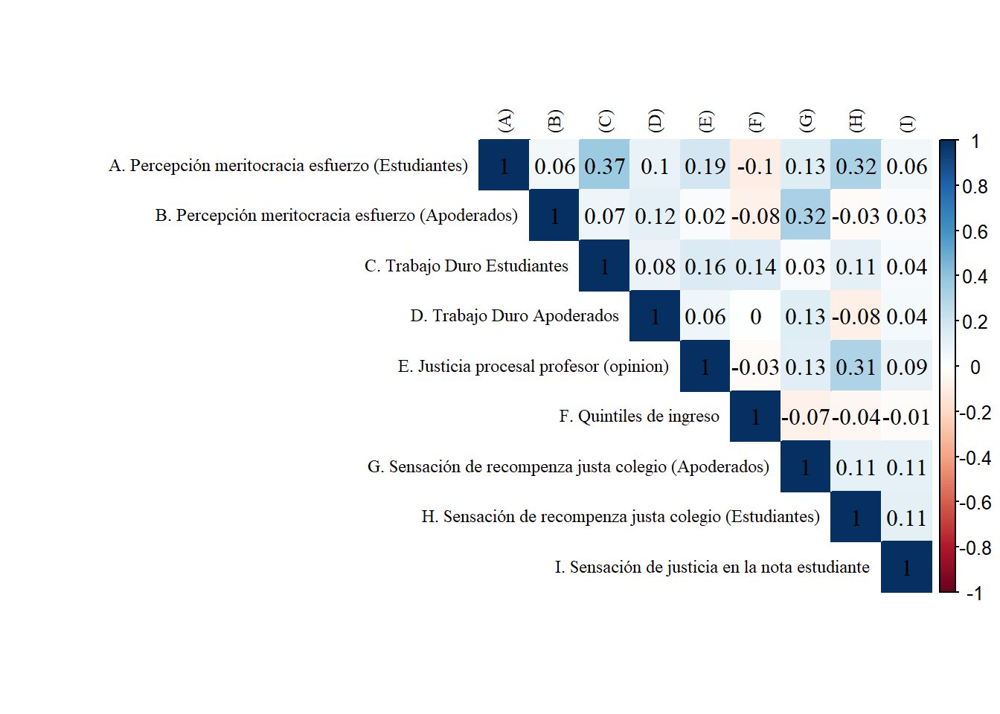
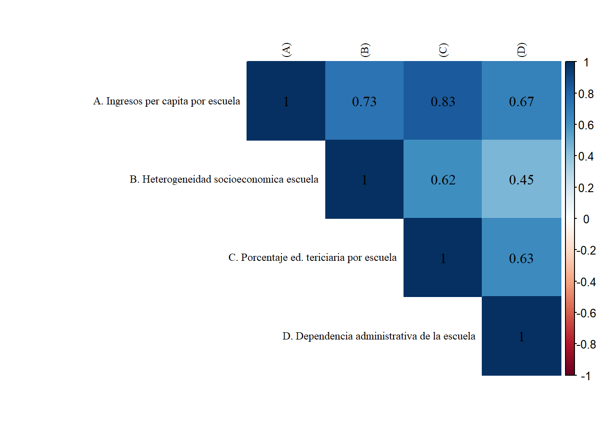
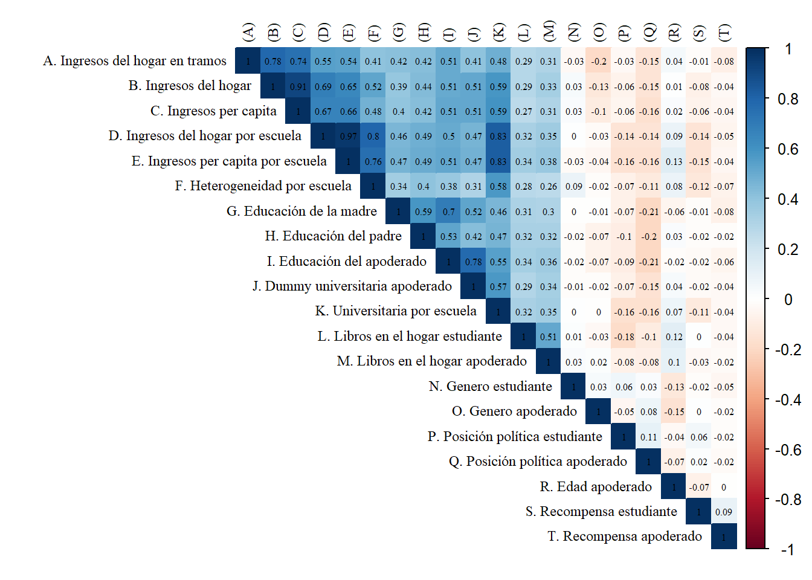

El presente documento tiene por finalidad la exploración y el análisis de datos para el artículo “La socialización de la meritocracia: el rol de la familia y la escuela” a cargo de Juan Carlos Castillo. El artículo se desarrolla en el marco del proyecto FONDECYT Regular N°1181239: “Socialización política y educación para la ciudadanía: el rol de la familia y de la escuela”.
El documento se estructurará en cuatro apartados. El primero corresponde a la carga de datos y las librerías. El segundo a los análisis descriptivos univariados. El tercero a la sección de análisis descriptivos bivariados. Por último, la cuarta sección estará dedicada al análisis multivariado.
# Cargar librerías
pacman::p_load(dplyr, #Manipulacion de datos
stargazer, #Tablas
sjmisc, # Tablas
summarytools, # Tablas
kableExtra, #Tablas
sjPlot, #Tablas y gráficos
corrplot, # Correlaciones
sessioninfo, # Información de la sesión de trabajo
ggplot2, # Graficos
sjlabelled, # Etiquetas
ordinal, # Modelos ordinales,
mixor, # Modelos ordinales
lme4, # Modelos mixtos,
lavaan, # CFA
texreg, # Tablas modelos
reghelper, # ICC,
table1, #Tabla bonita
car, #Varios
polycor #Correlaciones policloricas
)
# Cargar datos
load(file = "../input/data/ap_est.RData") # Base conjunta (apoderados y estudiantes)
# Orden para modelos ordinales (mixor package)
ap_est_rbd<-ap_est[order(ap_est$rbd_est),]
# Remover etiquetas para renderizar sin problemas
ap_est <- sjlabelled::remove_all_labels(ap_est)# Plot Likert: perc. trabajo duro apoderados y estudiantes
baselik<- ap_est %>% select(perc_trabajo_duro_est,perc_trabajo_duro_ap)
# short var labels
items <- c("Estudiantes", "Apoderados")
# cambiar orden para la leyenda
labels= c("Nada Importante", "Poco Importante", "Importante", "Muy Importante") ### E
#save
#png("../output/images/Plot-lik-trabajoduro.png", width = 700, height = 350)
sjPlot::plot_likert(baselik,
axis.labels = items,
legend.labels = labels,
legend.pos = "bottom",
#cat.neutral = , # identifica a indiferentes
geom.colors = c("#9ECAE1", "#6BAED6", "#4292C6",
"#2171B5"), # colorbrewer2.org
sort.frq = "neg.asc", # sort descending)
title = "[Percepción Trabajo Duro] Actualmente en Chile, para surgir en la vida ¿Cuán importante es el trabajo duro?",
intercept.line.color = "white", # vertical middle
expand.grid = F, # no inner margins in plot
show.n = FALSE, # hide N's in axis labels
grid.range = 1.8,
geom.size = 0.6, values = "sum.outside")#dev.off()Las respuestas de estudiantes y apoderados sobre la importancia del trabajo duro se concentran en las categorías más altas de la escala Likert. Un 81.2% de apoderados considera importante o muy importante el trabajo duro para surgir en la vida. En la misma linea, un 83.4% de los estudiantes comparte tal afirmación.
# Plot Likert: perc. esfuerzo apoderados y estudiantes
baselik<- ap_est %>% select(perc_esfuerzo_est,perc_esfuerzo_ap)
# short var labels
items <- c("Estudiantes", "Apoderados")
# cambiar orden para la leyenda
labels= c("Muy en desacuerdo", "En desacuerdo", "De acuerdo", "Muy de acuerdo") ### E
# save
#png("../output/images/Plot-lik-esfuerzo.png", width = 750, height = 300)
sjPlot::plot_likert(baselik,
axis.labels = items,
legend.labels = labels,
legend.pos = "bottom",
#cat.neutral = , # identifica a indiferentes
geom.colors = c("#9ECAE1", "#6BAED6", "#4292C6",
"#2171B5"), # colorbrewer2.org
sort.frq = "neg.asc", # sort descending)
title = "[Percepción Esfuerzo] En Chile, los que se esfuerzan salen adelante",
intercept.line.color = "white", # vertical middle
expand.grid = F, # no inner margins in plot
show.n = FALSE, # hide N's in axis labels
grid.range = 1.8,
geom.size = 0.6, values = "sum.outside")
#dev.off()Para el caso del grado de acuerdo con respecto a la afirmación “En Chile, los que se esfuerzan salen adelante” los resultados son similares al indicador anterior. Tanto en estudiantes como apoderados más del 80% de las respuestas se concentran en las categorías más altas, en este caso: “De acuerdo” y “Muy de acuerdo”.
select(ap_est, sj_indirect_ln, sj_indirect_noln) %>% summarytools::descr() %>% kable( format = "markdown",digits = 2,col.names = c("Sentido de justicia en las notas (Log)","Sentido de justicia en las notas (no Log)"), caption = "Factor loadings")| Sentido de justicia en las notas (Log) | Sentido de justicia en las notas (no Log) | |
|---|---|---|
| Mean | -0.04 | -0.04 |
| Std.Dev | 0.11 | 0.11 |
| Min | -0.88 | -0.88 |
| Q1 | -0.07 | -0.07 |
| Median | -0.03 | -0.03 |
| Q3 | 0.00 | 0.00 |
| Max | 1.06 | 1.06 |
| MAD | 0.05 | 0.05 |
| IQR | 0.07 | 0.07 |
| CV | -2.87 | -2.87 |
| Skewness | 1.82 | 1.82 |
| SE.Skewness | 0.06 | 0.06 |
| Kurtosis | 30.98 | 30.98 |
| N.Valid | 1464.00 | 1464.00 |
| Pct.Valid | 89.54 | 89.54 |
Llama la atención que los datos del sentido de justicia indirecto logaritmico y el sin logaritmo son exactamente iguales.
# Density plot
ggplot(ap_est, aes(x=sj_indirect_ln))+
geom_density(color="darkblue", fill="lightblue") Tanto los estadísticos como el gráfico de densidad sobre el sentido de justicia indirecto dan cuenta de una distribución con alta concentración de casos al medio (leptocúrtica) y asimetría positiva moderada (s=1.82). La mediana de -0.03 indica que al menos la mitad de los estudiantes de la muestra se siente subrecompensado con respecto a sus notas.
frq(ap_est$sj_direct_factor) %>% kable( format = "markdown",digits = 2, caption = "Factor loadings",
col.names = c("Alternativas","", "frecuencia", "Porcentaje", "Porcentje valido", "Porcentaje acumulado")
)
|
Respecto al indicador sobre sentido de justicia directo resalta que más del 60% de los estudiantes (datos validos) considera que merece sus notas de acuerdo al tiempo de estudio invertido. Por otro lado, poco más de un quinto de la muestra considera que sus notas son menos de las que merece, y un 13% restante se siente sobre recompensado.
Estos datos son contradictorios con los obtenidos a partir del sentido de justicia indirecto, lo que lleva a pensar que quizás no están midiendo el mismo constructo.
A continuación se presentan los descriptivos de la base de datos completa:
sjPlot::view_df(ap_est, show.type = T, show.prc = T, show.na = T)| ID | Name | Type | Label | missings | Values | Value Labels | % |
|---|---|---|---|---|---|---|---|
| 1 | rbd_est | numeric | 0 (0.00%) | range: 218-31421 | |||
| 2 | region_est | numeric | 0 (0.00%) | range: 2-13 | |||
| 3 | folio | numeric | 0 (0.00%) | range: 1-20390 | |||
| 4 | dependencia_est | numeric | 0 (0.00%) | range: 1-3 | |||
| 5 | pos_pol_est | numeric | 25 (1.53%) | range: 1-99 | |||
| 6 | genero_est | numeric | 25 (1.53%) | range: 1-3 | |||
| 7 | resp_prof | numeric | 159 (9.72%) | range: 1-4 | |||
| 8 | educ_padre | numeric | 224 (13.70%) | range: 1-5 | |||
| 9 | educ_madre | numeric | 181 (11.07%) | range: 1-5 | |||
| 10 | libros_hogar_est | numeric | 147 (8.99%) | range: 1-6 | |||
| 11 | perc_trabajo_duro_est | numeric | 47 (2.87%) | range: 1-4 | |||
| 12 | perc_esfuerzo_est | numeric | 67 (4.10%) | range: 1-4 | |||
| 13 | prom_obt | numeric | 136 (8.32%) | range: 1.0-7.0 | |||
| 14 | prom_mer | numeric | 165 (10.09%) | range: 1.0-7.0 | |||
| 15 | sj_direct | numeric | 94 (5.75%) | range: 1-3 | |||
| 16 | recompensa_est | numeric | 67 (4.10%) | range: 1-4 | |||
| 17 | tiempo_compartido | numeric | 0 (0.00%) | range: 1-9 | |||
| 18 | prom_percmer_est | numeric | 80 (4.89%) | range: 1.0-4.0 | |||
| 19 | perc_esfuerzo_factor_est | categorical | 67 (4.10%) |
Muy en desacuerdo En desacuerdo De acuerdo Muy de acuerdo |
3.76 14.48 44.64 37.12 |
||
| 20 | perc_trabajo_duro_factor_est | categorical | 47 (2.87%) |
Nada importante Algo importante Importante Muy importante |
4.35 12.22 26.01 57.43 |
||
| 21 | sj_indirect_ln | numeric | 171 (10.46%) | range: -0.9-1.1 | |||
| 22 | sj_indirect_noln | numeric | 171 (10.46%) | range: -0.9-1.1 | |||
| 23 | sj_direct_factor | categorical | 94 (5.75%) |
Menos de las que merezco Las que merezco Más de las que merezco |
22.65 63.47 13.89 |
||
| 24 | educ_padres | numeric | 238 (14.56%) | range: 1-5 | |||
| 25 | educ_padres_factor | numeric | 238 (14.56%) | range: 1-5 | |||
| 26 | genero_factor_est | categorical | 25 (1.53%) |
Hombre Mujer Otro |
51.80 46.15 2.05 |
||
| 27 | porc_muj_esc_est | numeric | 0 (0.00%) | range: 0.0-1.0 | |||
| 28 | resp_prof_factor | categorical | 159 (9.72%) |
Muy en desacuerdo En desacuerdo De acuerdo Muy de acuerdo |
7.66 23.31 54.00 15.04 |
||
| 29 | rest_prof_factor | categorical | 159 (9.72%) |
Muy en desacuerdo En desacuerdo De acuerdo Muy de acuerdo |
7.66 23.31 54.00 15.04 |
||
| 30 | pos_pol_factor_est | categorical | 25 (1.53%) |
Derecha Centro derecha Centro Centro Izquierda Izquierda Independiente Ninguna Ns/Nr |
10.62 4.97 3.73 4.97 5.09 4.04 21.86 44.72 |
||
| 31 | libros_hogar_factor_est | categorical | 147 (8.99%) |
Entre 0 y 10 libros Entre 11 y 25 libros Entre 26 y 100 libros Entre 101 y 200 libros Entre 201 y 500 libros Más de 500 libros |
22.18 23.39 29.17 13.51 7.59 4.17 |
||
| 32 | region_factor_est | categorical | 0 (0.00%) |
Región de Antofagasta Región del Maule Región Metropolitana |
24.89 21.65 53.46 |
||
| 33 | recompensa_factor_est | categorical | 67 (4.10%) |
Muy en desacuerdo En desacuerdo De acuerdo Muy de acuerdo |
10.14 23.79 49.87 16.20 |
||
| 34 | dependencia_factor_est | categorical | 0 (0.00%) |
Municipal Part. Subvencionado Part. Privado |
37.00 47.71 15.29 |
||
| 35 | rbd_ap | numeric | 919 (56.21%) | range: 218-31421 | |||
| 36 | region_ap | numeric | 919 (56.21%) | range: 2-13 | |||
| 37 | dependencia_ap | numeric | 919 (56.21%) | range: 1-3 | |||
| 38 | pos_pol_ap | numeric | 919 (56.21%) | range: 1-99 | |||
| 39 | genero_ap | numeric | 919 (56.21%) | range: 1-3 | |||
| 40 | nacimiento | numeric | 1010 (61.77%) | range: 1933-1992 | |||
| 41 | personas_hogar | numeric | 966 (59.08%) | range: 1-15 | |||
| 42 | educ | numeric | 952 (58.23%) | range: 1-4 | |||
| 43 | ingresos_tramos | numeric | 919 (56.21%) | range: 1-99 | |||
| 44 | libros_hogar_ap | numeric | 950 (58.10%) | range: 1-6 | |||
| 45 | perc_trabajo_duro_ap | numeric | 948 (57.98%) | range: 1-4 | |||
| 46 | perc_esfuerzo_ap | numeric | 953 (58.29%) | range: 1-4 | |||
| 47 | dem_desig | numeric | 938 (57.37%) | range: 1-4 | |||
| 48 | recompensa_ap | numeric | 969 (59.27%) | range: 1-4 | |||
| 49 | perc_trabajo_duro_factor_ap | categorical | 948 (57.98%) |
Nada importante Algo importante Importante Muy importante |
6.40 12.37 31.44 49.78 |
||
| 50 | perc_esfuerzo_factor_ap | categorical | 953 (58.29%) |
Muy en desacuerdo En desacuerdo De acuerdo Muy de acuerdo |
3.52 14.52 46.33 35.63 |
||
| 51 | prom_percmer_ap | numeric | 962 (58.84%) | range: 1.0-4.0 | |||
| 52 | ingresos | numeric | 1059 (64.77%) | range: 50500-3500000 | |||
| 53 | ingresos_pc | numeric | 1059 (64.77%) | range: 201-1750000 | |||
| 54 | ingresos_tramos_factor | categorical | 919 (56.21%) |
Menos de $101.000 mensuales líquidos De $101.001 a $134.000 mensuales líquidos De $134.001 a $179.000 mensuales líquidos De $179.001 a $224.000 mensuales líquidos De $224.001 a $291.000 mensuales líquidos De $291.001 a $358.000 mensuales líquidos De $358.001 a $448.000 mensuales líquidos De $448.001 a $1.000.000 mensuales líquidos De $1.000.001 a $2.000.000 mensuales líquidos De $2.000.001 a $3.000.000 mensuales líquidos Más de $3.000.000 mensuales líquidos Ns/Nr |
1.82 1.96 1.68 3.91 5.45 12.57 15.08 19.27 10.75 2.37 5.59 19.55 |
||
| 55 | quintiles_ingresos_pc | numeric | 1059 (64.77%) | range: 1-5 | |||
| 56 | quintiles_ingresos_pc_factor | categorical | 919 (56.21%) |
Quintil 1 Quintil 2 Quintil 3 Quintil 4 Quintil 5 Ns/Nr |
15.92 16.34 16.34 16.34 15.50 19.55 |
||
| 57 | edad_ap | numeric | 1010 (61.77%) | range: 27-86 | |||
| 58 | dem_desig_factor | categorical | 938 (57.37%) |
Muy en desacuerdo En desacuerdo De acuerdo Muy de acuerdo |
1.29 3.73 26.26 68.72 |
||
| 59 | genero_factor_ap | categorical | 919 (56.21%) |
Hombre Mujer Otro |
18.58 81.28 0.14 |
||
| 60 | porc_muj_esc_ap | numeric | 919 (56.21%) | range: 0.2-1.0 | |||
| 61 | pos_pol_factor_ap | categorical | 919 (56.21%) |
Derecha Centro Derecha Centro Centro Izquierda Izquierda Independiente Ninguna Ns/Nr |
7.54 6.28 2.93 5.73 6.42 6.70 48.18 16.20 |
||
| 62 | libros_hogar_factor_ap | categorical | 950 (58.10%) |
Entre 0 y 10 libros Entre 11 y 25 libros Entre 26 y 100 libros Entre 101 y 200 libros Entre 201 y 500 libros Más de 500 libros |
19.42 28.91 35.04 10.66 4.67 1.31 |
||
| 63 | region_factor_ap | categorical | 919 (56.21%) |
Región de Antofagasta Región del Maule Región Metropolitana |
16.48 29.61 53.91 |
||
| 64 | recompensa_factor_ap | categorical | 969 (59.27%) |
Muy en desacuerdo En desacuerdo De acuerdo Muy de acuerdo |
5.11 19.97 53.60 21.32 |
||
| 65 | ingresos_esc | numeric | 925 (56.57%) | range: 187500.0-3000000.0 | |||
| 66 | ingresos_pc_esc | numeric | 925 (56.57%) | range: 43368.0-947400.0 | |||
| 67 | univ | numeric | 952 (58.23%) | range: 0-1 | |||
| 68 | univ_esc | numeric | 919 (56.21%) | range: 0.0-0.9 | |||
| 69 | dependencia_factor_ap | categorical | 919 (56.21%) |
Municipal Part. Subvencionado Part. Privado |
31.28 54.33 14.39 |
||
| 70 | heterogen_esc | numeric | 925 (56.57%) | range: 38682.5-2189909.7 | |||
| 71 | educ_ap | numeric | 952 (58.23%) | range: 1-4 | |||
| 72 | educ_factor_ap | categorical | 952 (58.23%) |
8vo básico o menos Educación media Educación Técnica Superior Educación universitaria o posgrado |
11.27 44.22 25.92 18.59 |
||
| 73 | prom_percmer_ap_cwc | numeric | 962 (58.84%) | range: -2.4-1.7 | |||
| 74 | sj_indirect_ln_cwc | numeric | 171 (10.46%) | range: -0.8-1.0 | |||
| 75 | sj_direct_cwc | numeric | 94 (5.75%) | range: -1.2-1.5 | |||
| 76 | pos_pol_est_cwc | numeric | 25 (1.53%) | range: -84.2-81.6 | |||
| 77 | recompensa_est_cwc | numeric | 67 (4.10%) | range: -2.2-1.9 | |||
| 78 | resp_prof_cwc | numeric | 159 (9.72%) | range: -2.1-1.7 | |||
| 79 | prom_obt_cwc | numeric | 136 (8.32%) | range: -4.4-1.6 | |||
| 80 | prom_mer_cwc | numeric | 165 (10.09%) | range: -4.6-1.6 | |||
| 81 | pos_pol_ap_cwc | numeric | 919 (56.21%) | range: -71.6-90.1 | |||
| 82 | educ_ap_cwc | numeric | 952 (58.23%) | range: -1.9-2.1 | |||
| 83 | libros_hogar_ap_cwc | numeric | 950 (58.10%) | range: -2.3-3.9 | |||
| 84 | recompensa_ap_cwc | numeric | 969 (59.27%) | range: -2.2-2.3 | |||
| 85 | edad_ap_cwc | numeric | 1010 (61.77%) | range: -18.0-23.4 | |||
| 86 | dem_desig_cwc | numeric | 938 (57.37%) | range: -2.7-1.2 | |||
Se realizan dos gráficos para variables likert. El primero corresponde a la comparación de percepción del trabajo duro en estudiantes y apoderados. El segundo es la misma comparación pero para la percepción de esfuerzo.
A continuación se presenta una serie de tablas bivariadas. Primero, tablas de estadísticos descriptivos de las principales variables númericas (percepción meritocrática de estudiantes y apoderados y sentido de justicia indirecto) y variables categoricas de interés. Segundo, tablas de contingencia entre variables categoricas de interés.
## Variables númericas x genero estudiante
table1::label(ap_est$prom_percmer_est) <- "Percepcion meritocratica estudiantes"
table1::label(ap_est$prom_percmer_ap) <- "Percepcion meritocratica apoderados"
table1::label(ap_est$sj_indirect_ln) <- "Sentido de justicia indirecto"
table1::table1(~prom_percmer_est + prom_percmer_ap + sj_indirect_ln | genero_factor_est, data = ap_est)| Hombre (N=834) |
Mujer (N=743) |
Otro (N=33) |
Overall (N=1635) |
|
|---|---|---|---|---|
| Percepcion meritocratica estudiantes | ||||
| Mean (SD) | 3.30 (0.655) | 3.24 (0.659) | 3.00 (0.740) | 3.26 (0.665) |
| Median [Min, Max] | 3.50 [1.00, 4.00] | 3.50 [1.00, 4.00] | 3.00 [1.00, 4.00] | 3.50 [1.00, 4.00] |
| Missing | 41 (4.9%) | 34 (4.6%) | 0 (0%) | 80 (4.9%) |
| Percepcion meritocratica apoderados | ||||
| Mean (SD) | 3.19 (0.654) | 3.19 (0.599) | 3.25 (0.378) | 3.20 (0.625) |
| Median [Min, Max] | 3.50 [1.00, 4.00] | 3.00 [1.00, 4.00] | 3.00 [3.00, 4.00] | 3.50 [1.00, 4.00] |
| Missing | 491 (58.9%) | 425 (57.2%) | 25 (75.8%) | 962 (58.8%) |
| Sentido de justicia indirecto | ||||
| Mean (SD) | -0.0370 (0.115) | -0.0351 (0.0962) | -0.100 (0.175) | -0.0377 (0.108) |
| Median [Min, Max] | -0.0339 [-0.847, 0.956] | -0.0313 [-0.665, 1.06] | -0.0408 [-0.881, 0.0645] | -0.0323 [-0.881, 1.06] |
| Missing | 87 (10.4%) | 72 (9.7%) | 4 (12.1%) | 171 (10.5%) |
Promedios percepción meritocrática estudiantes y apoderados: A nivel de muestra no existen grandes diferencias en las medias del puntaje de percepcion meritocrática entre estudiantes hombres y mujeres. Si existe una diferencia un tanto más grande en la media (3.00) de aquellos estudian que se identifican con “Otro”. En el caso de los apoderados no hay grandes diferencias.
Sentido de justicia estudiantes: A nivel de muestra, estudiantes que se identifican con el genero Otro se sienten menos subrecompensados que hombres y mujeres. De todos modos el N de este grupo de estudiantes es considerablemente bajo (N=33).
## Variables numericas x posicion politica estudiantes
table1::label(ap_est$prom_percmer_est) <- "Percepcion meritocratica estudiantes"
table1::label(ap_est$prom_percmer_ap) <- "Percepcion meritocratica apoderados"
table1::label(ap_est$sj_indirect_ln) <- "Sentido de justicia indirecto"
table1::table1(~prom_percmer_est + prom_percmer_ap + sj_indirect_ln | pos_pol_factor_est, data = ap_est)| Derecha (N=171) |
Centro derecha (N=80) |
Centro (N=60) |
Centro Izquierda (N=80) |
Izquierda (N=82) |
Independiente (N=65) |
Ninguna (N=352) |
Ns/Nr (N=720) |
Overall (N=1635) |
|
|---|---|---|---|---|---|---|---|---|---|
| Percepcion meritocratica estudiantes | |||||||||
| Mean (SD) | 3.40 (0.584) | 3.20 (0.626) | 3.35 (0.604) | 3.16 (0.794) | 2.96 (0.814) | 3.14 (0.581) | 3.34 (0.608) | 3.26 (0.673) | 3.26 (0.665) |
| Median [Min, Max] | 3.50 [1.50, 4.00] | 3.00 [1.50, 4.00] | 3.50 [1.00, 4.00] | 3.50 [1.00, 4.00] | 3.00 [1.00, 4.00] | 3.00 [1.50, 4.00] | 3.50 [1.00, 4.00] | 3.50 [1.00, 4.00] | 3.50 [1.00, 4.00] |
| Missing | 4 (2.3%) | 2 (2.5%) | 1 (1.7%) | 0 (0%) | 2 (2.4%) | 1 (1.5%) | 15 (4.3%) | 54 (7.5%) | 80 (4.9%) |
| Percepcion meritocratica apoderados | |||||||||
| Mean (SD) | 3.31 (0.653) | 3.13 (0.540) | 3.43 (0.583) | 3.13 (0.555) | 3.01 (0.554) | 3.09 (0.681) | 3.14 (0.655) | 3.23 (0.621) | 3.20 (0.625) |
| Median [Min, Max] | 3.50 [1.00, 4.00] | 3.00 [1.00, 4.00] | 3.50 [2.00, 4.00] | 3.00 [2.00, 4.00] | 3.00 [2.00, 4.00] | 3.00 [1.50, 4.00] | 3.00 [1.50, 4.00] | 3.50 [1.00, 4.00] | 3.50 [1.00, 4.00] |
| Missing | 110 (64.3%) | 44 (55.0%) | 38 (63.3%) | 46 (57.5%) | 46 (56.1%) | 37 (56.9%) | 188 (53.4%) | 434 (60.3%) | 962 (58.8%) |
| Sentido de justicia indirecto | |||||||||
| Mean (SD) | -0.0464 (0.0963) | -0.0439 (0.0695) | -0.0347 (0.0823) | -0.0382 (0.0601) | -0.0390 (0.0929) | -0.0189 (0.173) | -0.0291 (0.114) | -0.0381 (0.108) | -0.0377 (0.108) |
| Median [Min, Max] | -0.0339 [-0.442, 0.550] | -0.0328 [-0.413, 0.0953] | -0.0339 [-0.236, 0.288] | -0.0310 [-0.266, 0.105] | -0.0331 [-0.357, 0.300] | -0.0339 [-0.464, 0.975] | -0.0310 [-0.560, 0.956] | -0.0323 [-0.847, 1.06] | -0.0323 [-0.881, 1.06] |
| Missing | 10 (5.8%) | 3 (3.8%) | 7 (11.7%) | 0 (0%) | 6 (7.3%) | 7 (10.8%) | 34 (9.7%) | 101 (14.0%) | 171 (10.5%) |
Percepción meritocrática estudiantes y apoderados: Llama la atención que el mayor contraste entre las medias del promedio de percepción meritocrática en estudiantes se da entre los polos del espectro político. Estudiantes de derecha cuentan con .4 puntos más que estudiantes de izquierda, o en otras palabras, los estudiantes de izquierda encuestados tienden a percibir menos meritocracia que los estudiantes de derecha. De todos modos, los N por cada grupo siguen siendo bajos en comparación a las categorías “Ninguno” y “Ns/Nr”. En el caso de los apoderados los valores extremos también se separan entre si por .4 pnntos, solo que esta vez son los apoderados de Centro quienes muestran mayor percepción meritocrática y los apoderados de izquierda siguen siendo los más bajos en este indicador.
NOTA: La posición política es del estudiante, por lo que la interpretación en el caso de los apoderados no tiene mucho sentido a priori
Sentido de justicia indirecto: Estudiantes que se identifican con la derecha y la centro derecha tienden a sentirse más subrecompensados en sus notas, con una media de -0.0464 y -0.0439 respectivamente. Estudiantes que reportan ser independientes son el grupo que reporta indices de subrecompensabilidad más bajos (-0.0189).
## Variables numericas x quintiles de ingresos
table1::label(ap_est$prom_percmer_est) <- "Percepcion meritocratica estudiantes"
table1::label(ap_est$prom_percmer_ap) <- "Percepcion meritocratica apoderados"
table1::label(ap_est$sj_indirect_ln) <- "Sentido de justicia indirecto"
table1::table1(~prom_percmer_est + prom_percmer_ap + sj_indirect_ln | quintiles_ingresos_pc_factor, data = ap_est)| Quintil 1 (N=114) |
Quintil 2 (N=117) |
Quintil 3 (N=117) |
Quintil 4 (N=117) |
Quintil 5 (N=111) |
Ns/Nr (N=140) |
Overall (N=1635) |
|
|---|---|---|---|---|---|---|---|
| Percepcion meritocratica estudiantes | |||||||
| Mean (SD) | 3.28 (0.655) | 3.26 (0.672) | 3.27 (0.678) | 3.26 (0.610) | 3.34 (0.644) | 3.22 (0.675) | 3.26 (0.665) |
| Median [Min, Max] | 3.50 [1.50, 4.00] | 3.50 [1.00, 4.00] | 3.50 [1.00, 4.00] | 3.50 [1.50, 4.00] | 3.50 [1.50, 4.00] | 3.50 [1.00, 4.00] | 3.50 [1.00, 4.00] |
| Missing | 4 (3.5%) | 4 (3.4%) | 4 (3.4%) | 1 (0.9%) | 3 (2.7%) | 8 (5.7%) | 80 (4.9%) |
| Percepcion meritocratica apoderados | |||||||
| Mean (SD) | 3.27 (0.664) | 3.26 (0.626) | 3.14 (0.594) | 3.10 (0.672) | 3.27 (0.567) | 3.13 (0.609) | 3.20 (0.625) |
| Median [Min, Max] | 3.50 [1.00, 4.00] | 3.50 [1.50, 4.00] | 3.00 [1.50, 4.00] | 3.00 [1.00, 4.00] | 3.50 [1.50, 4.00] | 3.00 [1.00, 4.00] | 3.50 [1.00, 4.00] |
| Missing | 6 (5.3%) | 5 (4.3%) | 3 (2.6%) | 2 (1.7%) | 0 (0%) | 27 (19.3%) | 962 (58.8%) |
| Sentido de justicia indirecto | |||||||
| Mean (SD) | -0.0512 (0.0603) | -0.0155 (0.121) | -0.0392 (0.0650) | -0.0348 (0.0780) | -0.0191 (0.0526) | -0.0259 (0.0971) | -0.0377 (0.108) |
| Median [Min, Max] | -0.0496 [-0.266, 0.136] | -0.0168 [-0.336, 0.936] | -0.0339 [-0.357, 0.118] | -0.0318 [-0.357, 0.194] | -0.0155 [-0.171, 0.318] | -0.0212 [-0.464, 0.569] | -0.0323 [-0.881, 1.06] |
| Missing | 8 (7.0%) | 14 (12.0%) | 8 (6.8%) | 9 (7.7%) | 6 (5.4%) | 20 (14.3%) | 171 (10.5%) |
Promedio percepción meritocracia estudiantes y apoderados: No parecen haber grandes diferencias entre los promedios de perepción meritocrática por quintil, tanto en estudiantes como en apoderados.
Sentido de justicia indirecto: Estudiantes de quintil 1 se sienten más subrecompensados que estudiantes de quintil 5, sin embargo, no se puede hablar de una tendencia progresiva ya que estudiantes de quintil 2 reportan valores similares a los de quintil 5.
## Variables numericas x sentido de justicia directo
table1::label(ap_est$prom_percmer_est) <- "Percepcion meritocratica estudiantes"
table1::label(ap_est$prom_percmer_ap) <- "Percepcion meritocratica apoderados"
table1::label(ap_est$sj_indirect_ln) <- "Sentido de justicia indirecto"
table1::table1(~prom_percmer_est + prom_percmer_ap + sj_indirect_ln | sj_direct_factor, data = ap_est)| Menos de las que merezco (N=349) |
Las que merezco (N=978) |
Más de las que merezco (N=214) |
Overall (N=1635) |
|
|---|---|---|---|---|
| Percepcion meritocratica estudiantes | ||||
| Mean (SD) | 3.17 (0.721) | 3.31 (0.635) | 3.26 (0.657) | 3.26 (0.665) |
| Median [Min, Max] | 3.50 [1.00, 4.00] | 3.50 [1.00, 4.00] | 3.50 [1.00, 4.00] | 3.50 [1.00, 4.00] |
| Missing | 11 (3.2%) | 28 (2.9%) | 4 (1.9%) | 80 (4.9%) |
| Percepcion meritocratica apoderados | ||||
| Mean (SD) | 3.16 (0.641) | 3.19 (0.629) | 3.25 (0.619) | 3.20 (0.625) |
| Median [Min, Max] | 3.00 [1.00, 4.00] | 3.00 [1.00, 4.00] | 3.50 [1.00, 4.00] | 3.50 [1.00, 4.00] |
| Missing | 223 (63.9%) | 556 (56.9%) | 116 (54.2%) | 962 (58.8%) |
| Sentido de justicia indirecto | ||||
| Mean (SD) | -0.0626 (0.127) | -0.0335 (0.0879) | -0.0121 (0.145) | -0.0377 (0.108) |
| Median [Min, Max] | -0.0473 [-0.881, 0.668] | -0.0308 [-0.511, 0.956] | -0.0237 [-0.420, 1.06] | -0.0323 [-0.881, 1.06] |
| Missing | 21 (6.0%) | 61 (6.2%) | 12 (5.6%) | 171 (10.5%) |
Percepción meritocratica estudiantes y apoderados: No hay grandes cambios entre grupos.
Sentido de justicia indirecta: En general, se condice el valor del indicador de sentido de justicia indirecto con los grupos del sentido de justicia directo, comparativamente hablando. Estudiantes que creen que no reciben las notas que merecen se sienten más subrecompensados que los demás grupos. Esta tendencia se sustenta considerando la correlación pequeña de 0.1, aunque probablemente la correlación no es mayor ya que estudiantes que si creen merecer sus notas y que se sacan mejores notas de las que merecen aun mantienen valores negativos en el indicador de sentido de justicia indirecto.
## Variables numericas x recompensa estudiantes
table1::label(ap_est$prom_percmer_est) <- "Percepcion meritocratica estudiantes"
table1::label(ap_est$prom_percmer_ap) <- "Percepcion meritocratica apoderados"
table1::label(ap_est$sj_indirect_ln) <- "Sentido de justicia indirecto"
table1::table1(~prom_percmer_est + prom_percmer_ap + sj_indirect_ln | recompensa_factor_est, data = ap_est)| Muy en desacuerdo (N=159) |
En desacuerdo (N=373) |
De acuerdo (N=782) |
Muy de acuerdo (N=254) |
Overall (N=1635) |
|
|---|---|---|---|---|---|
| Percepcion meritocratica estudiantes | |||||
| Mean (SD) | 2.92 (0.889) | 3.17 (0.689) | 3.30 (0.575) | 3.49 (0.617) | 3.26 (0.665) |
| Median [Min, Max] | 3.00 [1.00, 4.00] | 3.50 [1.00, 4.00] | 3.50 [1.50, 4.00] | 3.50 [1.50, 4.00] | 3.50 [1.00, 4.00] |
| Missing | 2 (1.3%) | 7 (1.9%) | 15 (1.9%) | 3 (1.2%) | 80 (4.9%) |
| Percepcion meritocratica apoderados | |||||
| Mean (SD) | 3.23 (0.609) | 3.27 (0.643) | 3.17 (0.626) | 3.15 (0.606) | 3.20 (0.625) |
| Median [Min, Max] | 3.00 [1.50, 4.00] | 3.50 [1.00, 4.00] | 3.00 [1.00, 4.00] | 3.00 [1.50, 4.00] | 3.50 [1.00, 4.00] |
| Missing | 106 (66.7%) | 234 (62.7%) | 438 (56.0%) | 137 (53.9%) | 962 (58.8%) |
| Sentido de justicia indirecto | |||||
| Mean (SD) | -0.0675 (0.180) | -0.0342 (0.108) | -0.0312 (0.0961) | -0.0447 (0.0850) | -0.0377 (0.108) |
| Median [Min, Max] | -0.0473 [-0.881, 0.936] | -0.0339 [-0.413, 1.06] | -0.0313 [-0.487, 0.975] | -0.0333 [-0.357, 0.569] | -0.0323 [-0.881, 1.06] |
| Missing | 18 (11.3%) | 33 (8.8%) | 63 (8.1%) | 14 (5.5%) | 171 (10.5%) |
Percepción meritocracia estudiantes y apoderados: Se logra apreciar una tendencia a nivel muestra en la percepción meritocrática de estudiantes. Estudiantes que están muy en desacuerdo con que los esfuerzos son recompensados en su escuela perciben menos meritocracia. En el otro polo y con casi 0.6 puntos de diferencia, estudiantes que están muy de acuerdo con que en su escuela los esfuerzos son recompensados perciben más meritocracia. En el caso de los apoderados no se da esta tendencia en las medias (considerando que la variable de recompensa es de estudiantes tiene sentido tal aleatoriedad).
NOTA: La sensación de recompensa es del estudiante, por lo que la interpretación en el caso de los apoderados no tiene mucho sentido a priori
Sentido de justicia indirecto: Estudiantes que están en desacuerdo con que los esfuerzos son recompensados en la escuela presentan un alto sentido de subrecompensación, aunque no se puede hablar de una tendencia.
## Variables numericas x dependencia administrativa
table1::label(ap_est$prom_percmer_est) <- "Percepcion meritocratica estudiantes"
table1::label(ap_est$prom_percmer_ap) <- "Percepcion meritocratica apoderados"
table1::label(ap_est$sj_indirect_ln) <- "Sentido de justicia indirecto"
table1::table1(~prom_percmer_est + prom_percmer_ap + sj_indirect_ln | dependencia_factor_est, data = ap_est)| Municipal (N=605) |
Part. Subvencionado (N=780) |
Part. Privado (N=250) |
Overall (N=1635) |
|
|---|---|---|---|---|
| Percepcion meritocratica estudiantes | ||||
| Mean (SD) | 3.21 (0.685) | 3.28 (0.655) | 3.31 (0.645) | 3.26 (0.665) |
| Median [Min, Max] | 3.50 [1.00, 4.00] | 3.50 [1.00, 4.00] | 3.50 [1.00, 4.00] | 3.50 [1.00, 4.00] |
| Missing | 45 (7.4%) | 28 (3.6%) | 7 (2.8%) | 80 (4.9%) |
| Percepcion meritocratica apoderados | ||||
| Mean (SD) | 3.19 (0.641) | 3.18 (0.636) | 3.28 (0.547) | 3.20 (0.625) |
| Median [Min, Max] | 3.50 [1.00, 4.00] | 3.00 [1.00, 4.00] | 3.50 [1.50, 4.00] | 3.50 [1.00, 4.00] |
| Missing | 405 (66.9%) | 407 (52.2%) | 150 (60.0%) | 962 (58.8%) |
| Sentido de justicia indirecto | ||||
| Mean (SD) | -0.0528 (0.133) | -0.0312 (0.0969) | -0.0250 (0.0732) | -0.0377 (0.108) |
| Median [Min, Max] | -0.0370 [-0.881, 1.06] | -0.0323 [-0.511, 0.956] | -0.0157 [-0.442, 0.350] | -0.0323 [-0.881, 1.06] |
| Missing | 95 (15.7%) | 61 (7.8%) | 15 (6.0%) | 171 (10.5%) |
Percepción meritocratica estudiantes y apoderados: No se aprecian grandes cambios entre los promedios de percepcion meritocraticas por tipo de dependencia administrativa.
Sentido de justicia indirecto: Parece existir una tendencia, estudiantes de escuelas municipales se sientes más subrecompensados que estudiantes de escuelas particulares privadas.
## Variables numericas x respuesta profesor
table1::label(ap_est$prom_percmer_est) <- "Percepcion meritocratica estudiantes"
table1::label(ap_est$prom_percmer_ap) <- "Percepcion meritocratica apoderados"
table1::label(ap_est$sj_indirect_ln) <- "Sentido de justicia indirecto"
table1::table1(~prom_percmer_est + prom_percmer_ap + sj_indirect_ln | resp_prof_factor, data = ap_est)| Muy en desacuerdo (N=113) |
En desacuerdo (N=344) |
De acuerdo (N=797) |
Muy de acuerdo (N=222) |
Overall (N=1635) |
|
|---|---|---|---|---|---|
| Percepcion meritocratica estudiantes | |||||
| Mean (SD) | 3.00 (0.838) | 3.14 (0.685) | 3.30 (0.625) | 3.44 (0.576) | 3.26 (0.665) |
| Median [Min, Max] | 3.00 [1.00, 4.00] | 3.00 [1.00, 4.00] | 3.50 [1.00, 4.00] | 3.50 [1.50, 4.00] | 3.50 [1.00, 4.00] |
| Missing | 2 (1.8%) | 8 (2.3%) | 27 (3.4%) | 2 (0.9%) | 80 (4.9%) |
| Percepcion meritocratica apoderados | |||||
| Mean (SD) | 3.02 (0.733) | 3.22 (0.599) | 3.20 (0.594) | 3.22 (0.691) | 3.20 (0.625) |
| Median [Min, Max] | 3.00 [1.00, 4.00] | 3.50 [1.50, 4.00] | 3.50 [1.00, 4.00] | 3.50 [1.00, 4.00] | 3.50 [1.00, 4.00] |
| Missing | 72 (63.7%) | 220 (64.0%) | 433 (54.3%) | 126 (56.8%) | 962 (58.8%) |
| Sentido de justicia indirecto | |||||
| Mean (SD) | -0.0399 (0.143) | -0.0365 (0.124) | -0.0369 (0.0962) | -0.0297 (0.0972) | -0.0377 (0.108) |
| Median [Min, Max] | -0.0339 [-0.560, 0.550] | -0.0408 [-0.665, 1.06] | -0.0313 [-0.881, 0.956] | -0.0168 [-0.420, 0.975] | -0.0323 [-0.881, 1.06] |
| Missing | 16 (14.2%) | 28 (8.1%) | 57 (7.2%) | 13 (5.9%) | 171 (10.5%) |
Percepción meritocrática estudiantes y apoderados: Parece hacer una tendencia gradual en la que a mayor grado de acuerdo respecto a la afirmación “El profesor toma en cuenta mi opinión” existe una mayor percepción de meritocracia en estudiantes. Estudiantes que están muy en desacuerdo presentan una media de 3, en cambio estudiantes que están muy de acuerdo presentan una media de 3.44. En el caso de los apoderados los valores no siguen una tendencia, aunque la media del grupo “Muy en desacuerdo” es comaprativamente baja.
Sentido de justicia indirecto: No parece haber una tendencia entre la relación del sentido de justicia indirecto y el hecho de que el profesor considere la opinión de los estudiantes. Sin embargo, si resalta que estudiantes que están muy de acuerdo con la sentencia presentan menos sensación de subrecompensa (app .6 puntos) que los otros grupos.
# Sentido de justicia directo x genero estudiante
sjt.xtab(ap_est$genero_factor_est, ap_est$sj_direct_factor,
show.col.prc=TRUE,
show.summary=TRUE,
show.exp = TRUE
)| genero_factor_est | sj_direct_factor | Total | ||
|---|---|---|---|---|
|
Menos de las que merezco |
Las que merezco |
Más de las que merezco |
||
| Hombre |
143 176 42.1 % |
521 502 53.7 % |
124 111 57.9 % |
788 788 51.7 % |
| Mujer |
187 157 55 % |
432 450 44.5 % |
87 99 40.7 % |
706 706 46.3 % |
| Otro |
10 7 2.9 % |
18 20 1.9 % |
3 4 1.4 % |
31 31 2 % |
| Total |
340 340 100 % |
971 971 100 % |
214 214 100 % |
1525 1525 100 % |
χ2=18.121 · df=4 · Cramer’s V=0.077 · Fisher’s p=0.000 |
# Comprobar
chisq.test(ap_est$genero_factor_est, ap_est$sj_direct_factor)##
## Pearson's Chi-squared test
##
## data: ap_est$genero_factor_est and ap_est$sj_direct_factor
## X-squared = 18.121, df = 4, p-value = 0.001169# Ojo, hay una casilla con menos de 5 casos.# Sentido de justicia directo x posicion política estudiantes
sjt.xtab(ap_est$pos_pol_factor_est, ap_est$sj_direct_factor,
show.col.prc=TRUE,
show.summary=TRUE,
show.exp = TRUE
)| pos_pol_factor_est | sj_direct_factor | Total | ||
|---|---|---|---|---|
|
Menos de las que merezco |
Las que merezco |
Más de las que merezco |
||
| Derecha |
40 37 11.7 % |
101 103 10.5 % |
22 23 10.3 % |
163 163 10.7 % |
| Centro derecha |
19 18 5.6 % |
40 50 4.2 % |
20 11 9.4 % |
79 79 5.2 % |
| Centro |
10 12 2.9 % |
36 35 3.7 % |
9 8 4.2 % |
55 55 3.6 % |
| Centro Izquierda |
17 18 5 % |
45 49 4.7 % |
16 11 7.5 % |
78 78 5.1 % |
| Izquierda |
18 18 5.3 % |
54 51 5.6 % |
9 11 4.2 % |
81 81 5.3 % |
| Independiente |
11 14 3.2 % |
43 40 4.5 % |
9 9 4.2 % |
63 63 4.2 % |
| Ninguna |
69 74 20.2 % |
218 209 22.6 % |
43 46 20.2 % |
330 330 21.7 % |
| Ns/Nr |
158 151 46.2 % |
426 424 44.2 % |
85 94 39.9 % |
669 669 44.1 % |
| Total |
342 342 100 % |
963 963 100 % |
213 213 100 % |
1518 1518 100 % |
χ2=16.899 · df=14 · Cramer’s V=0.075 · p=0.262 |
chisq.test(ap_est$pos_pol_factor_est, ap_est$sj_direct_factor)##
## Pearson's Chi-squared test
##
## data: ap_est$pos_pol_factor_est and ap_est$sj_direct_factor
## X-squared = 16.899, df = 14, p-value = 0.2616# Sentido de justicia directo x quintiles
sjt.xtab(ap_est$quintiles_ingresos_pc_factor, ap_est$sj_direct_factor,
show.col.prc=TRUE,
show.summary=TRUE,
show.exp = TRUE
)| quintiles_ingresos_pc_factor | sj_direct_factor | Total | ||
|---|---|---|---|---|
|
Menos de las que merezco |
Las que merezco |
Más de las que merezco |
||
| Quintil 1 |
21 21 15.7 % |
77 72 17.1 % |
11 16 10.9 % |
109 109 15.9 % |
| Quintil 2 |
19 22 14.2 % |
76 73 16.9 % |
16 16 15.8 % |
111 111 16.2 % |
| Quintil 3 |
15 22 11.2 % |
79 72 17.6 % |
16 16 15.8 % |
110 110 16.1 % |
| Quintil 4 |
21 22 15.7 % |
74 75 16.4 % |
19 17 18.8 % |
114 114 16.6 % |
| Quintil 5 |
29 21 21.6 % |
64 72 14.2 % |
16 16 15.8 % |
109 109 15.9 % |
| Ns/Nr |
29 26 21.6 % |
80 87 17.8 % |
23 19 22.8 % |
132 132 19.3 % |
| Total |
134 134 100 % |
450 450 100 % |
101 101 100 % |
685 685 100 % |
χ2=10.593 · df=10 · Cramer’s V=0.088 · p=0.390 |
chisq.test(ap_est$quintiles_ingresos_pc_factor, ap_est$sj_direct_factor)##
## Pearson's Chi-squared test
##
## data: ap_est$quintiles_ingresos_pc_factor and ap_est$sj_direct_factor
## X-squared = 10.593, df = 10, p-value = 0.3901# Sentido de justicia directo x dependencia administrativa
sjt.xtab(ap_est$dependencia_factor_est, ap_est$sj_direct_factor,
show.col.prc=TRUE,
show.summary=TRUE,
show.exp = TRUE
)| dependencia_factor_est | sj_direct_factor | Total | ||
|---|---|---|---|---|
|
Menos de las que merezco |
Las que merezco |
Más de las que merezco |
||
| Municipal |
119 125 34.1 % |
362 352 37 % |
73 77 34.1 % |
554 554 36 % |
| Part. Subvencionado |
152 169 43.6 % |
489 474 50 % |
106 104 49.5 % |
747 747 48.5 % |
| Part. Privado |
78 54 22.3 % |
127 152 13 % |
35 33 16.4 % |
240 240 15.6 % |
| Total |
349 349 100 % |
978 978 100 % |
214 214 100 % |
1541 1541 100 % |
χ2=17.683 · df=4 · Cramer’s V=0.076 · p=0.001 |
# Percepcion esfuerzo estudiante x genero estudiante
sjt.xtab(ap_est$genero_factor_est, ap_est$perc_esfuerzo_factor_est,
show.col.prc=TRUE,
show.summary=TRUE,
show.exp = TRUE
)| genero_factor_est | perc_esfuerzo_factor_est | Total | |||
|---|---|---|---|---|---|
| Muy en desacuerdo | En desacuerdo | De acuerdo | Muy de acuerdo | ||
| Hombre |
31 29 54.4 % |
103 115 46.2 % |
360 356 52.2 % |
305 298 52.9 % |
799 799 51.6 % |
| Mujer |
24 26 42.1 % |
113 103 50.7 % |
314 319 45.5 % |
264 267 45.8 % |
715 715 46.2 % |
| Otro |
2 1 3.5 % |
7 5 3.1 % |
16 15 2.3 % |
8 12 1.4 % |
33 33 2.1 % |
| Total |
57 57 100 % |
223 223 100 % |
690 690 100 % |
577 577 100 % |
1547 1547 100 % |
χ2=6.022 · df=6 · Cramer’s V=0.044 · Fisher’s p=0.348 |
# Percepcion esfuerzo estudiante x posicion política estudiantes
sjt.xtab(ap_est$pos_pol_factor_est, ap_est$perc_esfuerzo_factor_est,
show.col.prc=TRUE,
show.summary=TRUE,
show.exp = TRUE
)| pos_pol_factor_est | perc_esfuerzo_factor_est | Total | |||
|---|---|---|---|---|---|
| Muy en desacuerdo | En desacuerdo | De acuerdo | Muy de acuerdo | ||
| Derecha |
6 6 10.5 % |
17 24 7.6 % |
71 74 10.4 % |
74 63 12.8 % |
168 168 10.9 % |
| Centro derecha |
1 3 1.8 % |
20 11 8.9 % |
33 34 4.8 % |
24 29 4.1 % |
78 78 5.1 % |
| Centro |
1 2 1.8 % |
7 9 3.1 % |
27 26 4 % |
24 22 4.1 % |
59 59 3.8 % |
| Centro Izquierda |
5 3 8.8 % |
16 12 7.1 % |
31 35 4.5 % |
28 30 4.8 % |
80 80 5.2 % |
| Izquierda |
8 3 14 % |
20 12 8.9 % |
36 36 5.3 % |
17 30 2.9 % |
81 81 5.2 % |
| Independiente |
2 2 3.5 % |
9 9 4 % |
34 28 5 % |
19 24 3.3 % |
64 64 4.1 % |
| Ninguna |
8 13 14 % |
54 49 24 % |
139 150 20.4 % |
138 127 23.8 % |
339 339 22 % |
| Ns/Nr |
26 25 45.6 % |
82 98 36.4 % |
311 298 45.6 % |
256 254 44.1 % |
675 675 43.7 % |
| Total |
57 57 100 % |
225 225 100 % |
682 682 100 % |
580 580 100 % |
1544 1544 100 % |
χ2=47.306 · df=21 · Cramer’s V=0.101 · Fisher’s p=0.002 |
# Percepcion esfuerzo estudiante x quintiles
sjt.xtab(ap_est$quintiles_ingresos_pc_factor, ap_est$perc_esfuerzo_factor_est,
show.col.prc=TRUE,
show.summary=TRUE,
show.exp = TRUE
)| quintiles_ingresos_pc_factor | perc_esfuerzo_factor_est | Total | |||
|---|---|---|---|---|---|
| Muy en desacuerdo | En desacuerdo | De acuerdo | Muy de acuerdo | ||
| Quintil 1 |
3 4 10.7 % |
13 17 12 % |
42 46 14.3 % |
52 42 19.6 % |
110 110 15.9 % |
| Quintil 2 |
4 5 14.3 % |
16 18 14.8 % |
51 48 17.4 % |
42 43 15.8 % |
113 113 16.3 % |
| Quintil 3 |
7 5 25 % |
14 18 13 % |
52 48 17.7 % |
41 44 15.5 % |
114 114 16.4 % |
| Quintil 4 |
3 5 10.7 % |
26 18 24.1 % |
50 49 17.1 % |
37 44 14 % |
116 116 16.7 % |
| Quintil 5 |
5 4 17.9 % |
21 17 19.4 % |
39 46 13.3 % |
43 41 16.2 % |
108 108 15.6 % |
| Ns/Nr |
6 5 21.4 % |
18 21 16.7 % |
59 56 20.1 % |
50 51 18.9 % |
133 133 19.2 % |
| Total |
28 28 100 % |
108 108 100 % |
293 293 100 % |
265 265 100 % |
694 694 100 % |
χ2=15.309 · df=15 · Cramer’s V=0.086 · Fisher’s p=0.463 |
# Percepcion esfuerzo estudiante x dependencia administrativa
sjt.xtab(ap_est$dependencia_factor_est, ap_est$perc_esfuerzo_factor_est,
show.col.prc=TRUE,
show.summary=TRUE,
show.exp = TRUE
)| dependencia_factor_est | perc_esfuerzo_factor_est | Total | |||
|---|---|---|---|---|---|
| Muy en desacuerdo | En desacuerdo | De acuerdo | Muy de acuerdo | ||
| Municipal |
30 21 50.8 % |
87 82 38.3 % |
242 254 34.6 % |
210 211 36.1 % |
569 569 36.3 % |
| Part. Subvencionado |
21 28 35.6 % |
101 109 44.5 % |
346 338 49.4 % |
288 281 49.5 % |
756 756 48.2 % |
| Part. Privado |
8 9 13.6 % |
39 35 17.2 % |
112 108 16 % |
84 90 14.4 % |
243 243 15.5 % |
| Total |
59 59 100 % |
227 227 100 % |
700 700 100 % |
582 582 100 % |
1568 1568 100 % |
χ2=8.389 · df=6 · Cramer’s V=0.052 · p=0.211 |
# Percepcion esfuerzo estudiante x percepción esfuerzo apoderados
sjt.xtab(ap_est$perc_esfuerzo_factor_ap, ap_est$perc_esfuerzo_factor_est,
show.col.prc=TRUE,
show.summary=TRUE,
show.exp = TRUE
)| perc_esfuerzo_factor_ap | perc_esfuerzo_factor_est | Total | |||
|---|---|---|---|---|---|
| Muy en desacuerdo | En desacuerdo | De acuerdo | Muy de acuerdo | ||
| Muy en desacuerdo |
2 1 7.7 % |
4 4 3.8 % |
7 10 2.5 % |
11 9 4.3 % |
24 24 3.6 % |
| En desacuerdo |
2 4 7.7 % |
20 15 19 % |
37 41 13.4 % |
38 37 14.9 % |
97 97 14.6 % |
| De acuerdo |
14 12 53.8 % |
48 48 45.7 % |
139 128 50.2 % |
105 118 41.2 % |
306 306 46.2 % |
| Muy de acuerdo |
8 9 30.8 % |
33 37 31.4 % |
94 99 33.9 % |
101 91 39.6 % |
236 236 35.6 % |
| Total |
26 26 100 % |
105 105 100 % |
277 277 100 % |
255 255 100 % |
663 663 100 % |
χ2=9.760 · df=9 · Cramer’s V=0.070 · Fisher’s p=0.340 |
# Percepcion esfuerzo estudiante x percepción trabajo duro apoderados
sjt.xtab(ap_est$perc_trabajo_duro_factor_ap, ap_est$perc_esfuerzo_factor_est,
show.col.prc=TRUE,
show.summary=TRUE,
show.exp = TRUE
)| perc_trabajo_duro_factor_ap | perc_esfuerzo_factor_est | Total | |||
|---|---|---|---|---|---|
| Muy en desacuerdo | En desacuerdo | De acuerdo | Muy de acuerdo | ||
| Nada importante |
1 2 3.8 % |
5 7 4.7 % |
25 18 8.8 % |
12 16 4.8 % |
43 43 6.4 % |
| Algo importante |
2 3 7.7 % |
11 13 10.3 % |
45 35 15.9 % |
24 31 9.5 % |
82 82 12.3 % |
| Importante |
12 8 46.2 % |
42 34 39.3 % |
84 90 29.7 % |
74 80 29.4 % |
212 212 31.7 % |
| Muy importante |
11 13 42.3 % |
49 53 45.8 % |
129 140 45.6 % |
142 125 56.3 % |
331 331 49.6 % |
| Total |
26 26 100 % |
107 107 100 % |
283 283 100 % |
252 252 100 % |
668 668 100 % |
χ2=18.049 · df=9 · Cramer’s V=0.095 · Fisher’s p=0.051 |
# Percepcion trabajo duro estudiante x genero estudiante
sjt.xtab(ap_est$genero_factor_est, ap_est$perc_trabajo_duro_factor_est,
show.col.prc=TRUE,
show.summary=TRUE,
show.exp = TRUE
)| genero_factor_est | perc_trabajo_duro_factor_est | Total | |||
|---|---|---|---|---|---|
| Nada importante | Algo importante | Importante | Muy importante | ||
| Hombre |
35 34 53.8 % |
73 99 38.2 % |
225 212 54.9 % |
478 466 53.1 % |
811 811 51.8 % |
| Mujer |
26 30 40 % |
113 88 59.2 % |
177 189 43.2 % |
407 416 45.2 % |
723 723 46.1 % |
| Otro |
4 1 6.2 % |
5 4 2.6 % |
8 9 2 % |
16 19 1.8 % |
33 33 2.1 % |
| Total |
65 65 100 % |
191 191 100 % |
410 410 100 % |
901 901 100 % |
1567 1567 100 % |
χ2=22.207 · df=6 · Cramer’s V=0.084 · Fisher’s p=0.000 |
# Percepcion trabajo duro estudiante x posicion política estudiantes
sjt.xtab(ap_est$pos_pol_factor_est, ap_est$perc_trabajo_duro_factor_est,
show.col.prc=TRUE,
show.summary=TRUE,
show.exp = TRUE
)| pos_pol_factor_est | perc_trabajo_duro_factor_est | Total | |||
|---|---|---|---|---|---|
| Nada importante | Algo importante | Importante | Muy importante | ||
| Derecha |
2 7 3.1 % |
14 20 7.4 % |
44 44 10.8 % |
108 97 12 % |
168 168 10.7 % |
| Centro derecha |
1 3 1.5 % |
13 10 6.9 % |
24 21 5.9 % |
42 46 4.7 % |
80 80 5.1 % |
| Centro |
2 2 3.1 % |
5 7 2.6 % |
17 16 4.2 % |
36 35 4 % |
60 60 3.8 % |
| Centro Izquierda |
4 3 6.2 % |
12 10 6.3 % |
21 21 5.2 % |
43 46 4.8 % |
80 80 5.1 % |
| Izquierda |
7 3 10.8 % |
16 10 8.5 % |
16 21 3.9 % |
42 47 4.7 % |
81 81 5.2 % |
| Independiente |
5 3 7.7 % |
9 8 4.8 % |
19 17 4.7 % |
32 38 3.5 % |
65 65 4.2 % |
| Ninguna |
10 14 15.4 % |
30 42 15.9 % |
97 90 23.8 % |
208 199 23 % |
345 345 22.1 % |
| Ns/Nr |
34 28 52.3 % |
90 83 47.6 % |
169 178 41.5 % |
392 395 43.4 % |
685 685 43.8 % |
| Total |
65 65 100 % |
189 189 100 % |
407 407 100 % |
903 903 100 % |
1564 1564 100 % |
χ2=32.841 · df=21 · Cramer’s V=0.084 · Fisher’s p=0.035 |
# Percepcion trabajo duro estudiante x quintiles
sjt.xtab(ap_est$quintiles_ingresos_pc_factor, ap_est$perc_trabajo_duro_factor_est,
show.col.prc=TRUE,
show.summary=TRUE,
show.exp = TRUE
)| quintiles_ingresos_pc_factor | perc_trabajo_duro_factor_est | Total | |||
|---|---|---|---|---|---|
| Nada importante | Algo importante | Importante | Muy importante | ||
| Quintil 1 |
4 4 16.7 % |
19 13 23.8 % |
31 31 16.1 % |
59 66 14.4 % |
113 113 16 % |
| Quintil 2 |
7 4 29.2 % |
7 13 8.8 % |
39 32 20.2 % |
63 67 15.4 % |
116 116 16.4 % |
| Quintil 3 |
4 4 16.7 % |
13 13 16.2 % |
29 31 15 % |
69 67 16.8 % |
115 115 16.3 % |
| Quintil 4 |
1 4 4.2 % |
16 13 20 % |
25 32 13 % |
75 68 18.3 % |
117 117 16.5 % |
| Quintil 5 |
2 4 8.3 % |
10 13 12.5 % |
24 30 12.4 % |
75 64 18.3 % |
111 111 15.7 % |
| Ns/Nr |
6 5 25 % |
15 15 18.8 % |
45 37 23.3 % |
69 78 16.8 % |
135 135 19.1 % |
| Total |
24 24 100 % |
80 80 100 % |
193 193 100 % |
410 410 100 % |
707 707 100 % |
χ2=23.977 · df=15 · Cramer’s V=0.106 · Fisher’s p=0.052 |
# Percepcion trabajo duro estudiante x dependencia administrativa
sjt.xtab(ap_est$dependencia_factor_est, ap_est$perc_trabajo_duro_factor_est,
show.col.prc=TRUE,
show.summary=TRUE,
show.exp = TRUE
)| dependencia_factor_est | perc_trabajo_duro_factor_est | Total | |||
|---|---|---|---|---|---|
| Nada importante | Algo importante | Importante | Muy importante | ||
| Municipal |
26 25 37.7 % |
88 70 45.4 % |
152 149 36.8 % |
308 330 33.8 % |
574 574 36.1 % |
| Part. Subvencionado |
36 33 52.2 % |
85 94 43.8 % |
201 199 48.7 % |
444 440 48.7 % |
766 766 48.2 % |
| Part. Privado |
7 11 10.1 % |
21 30 10.8 % |
60 64 14.5 % |
160 142 17.5 % |
248 248 15.6 % |
| Total |
69 69 100 % |
194 194 100 % |
413 413 100 % |
912 912 100 % |
1588 1588 100 % |
χ2=13.794 · df=6 · Cramer’s V=0.066 · p=0.032 |
# Percepcion trabajo duro estudiante x percepción trabajo duro apoderados
sjt.xtab(ap_est$perc_trabajo_duro_factor_ap, ap_est$perc_trabajo_duro_factor_est,
show.col.prc=TRUE,
show.summary=TRUE,
show.exp = TRUE
)| perc_trabajo_duro_factor_ap | perc_trabajo_duro_factor_est | Total | |||
|---|---|---|---|---|---|
| Nada importante | Algo importante | Importante | Muy importante | ||
| Nada importante |
1 2 4.2 % |
10 5 13 % |
13 12 7 % |
20 25 5.1 % |
44 44 6.5 % |
| Algo importante |
1 3 4.2 % |
10 9 13 % |
29 23 15.5 % |
42 47 10.7 % |
82 82 12.1 % |
| Importante |
12 8 50 % |
16 24 20.8 % |
61 59 32.6 % |
125 123 31.9 % |
214 214 31.5 % |
| Muy importante |
10 12 41.7 % |
41 38 53.2 % |
84 94 44.9 % |
205 196 52.3 % |
340 340 50 % |
| Total |
24 24 100 % |
77 77 100 % |
187 187 100 % |
392 392 100 % |
680 680 100 % |
χ2=17.568 · df=9 · Cramer’s V=0.093 · Fisher’s p=0.043 |
# Percepcion trabajo duro estudiante x percepción esfuerzo apoderados
sjt.xtab(ap_est$perc_esfuerzo_factor_ap, ap_est$perc_trabajo_duro_factor_est,
show.col.prc=TRUE,
show.summary=TRUE,
show.exp = TRUE
)| perc_esfuerzo_factor_ap | perc_trabajo_duro_factor_est | Total | |||
|---|---|---|---|---|---|
| Nada importante | Algo importante | Importante | Muy importante | ||
| Muy en desacuerdo |
1 1 4.2 % |
7 3 9.1 % |
7 6 3.8 % |
8 13 2 % |
23 23 3.4 % |
| En desacuerdo |
6 4 25 % |
11 11 14.3 % |
22 27 12 % |
60 57 15.3 % |
99 99 14.7 % |
| De acuerdo |
11 11 45.8 % |
36 36 46.8 % |
82 85 44.8 % |
184 181 47.1 % |
313 313 46.4 % |
| Muy de acuerdo |
6 9 25 % |
23 27 29.9 % |
72 65 39.3 % |
139 139 35.5 % |
240 240 35.6 % |
| Total |
24 24 100 % |
77 77 100 % |
183 183 100 % |
391 391 100 % |
675 675 100 % |
χ2=14.642 · df=9 · Cramer’s V=0.085 · Fisher’s p=0.111 |
# Recompensa justa estudiantes x genero estudiante
sjt.xtab(ap_est$genero_factor_est, ap_est$recompensa_factor_est,
show.col.prc=TRUE,
show.summary=TRUE,
show.exp = TRUE
)| genero_factor_est | recompensa_factor_est | Total | |||
|---|---|---|---|---|---|
| Muy en desacuerdo | En desacuerdo | De acuerdo | Muy de acuerdo | ||
| Hombre |
91 80 58.7 % |
182 188 50.1 % |
395 402 50.8 % |
133 130 52.8 % |
801 801 51.8 % |
| Mujer |
58 71 37.4 % |
172 167 47.4 % |
370 358 47.6 % |
113 116 44.8 % |
713 713 46.1 % |
| Otro |
6 3 3.9 % |
9 8 2.5 % |
12 17 1.5 % |
6 5 2.4 % |
33 33 2.1 % |
| Total |
155 155 100 % |
363 363 100 % |
777 777 100 % |
252 252 100 % |
1547 1547 100 % |
χ2=8.682 · df=6 · Cramer’s V=0.053 · Fisher’s p=0.171 |
# Recompensa justa estudiantes x posicion política estudiantes
sjt.xtab(ap_est$pos_pol_factor_est, ap_est$recompensa_factor_est,
show.col.prc=TRUE,
show.summary=TRUE,
show.exp = TRUE
)| pos_pol_factor_est | recompensa_factor_est | Total | |||
|---|---|---|---|---|---|
| Muy en desacuerdo | En desacuerdo | De acuerdo | Muy de acuerdo | ||
| Derecha |
13 17 8.4 % |
42 40 11.5 % |
90 84 11.6 % |
23 27 9.2 % |
168 168 10.9 % |
| Centro derecha |
9 8 5.8 % |
21 19 5.8 % |
39 40 5 % |
11 13 4.4 % |
80 80 5.2 % |
| Centro |
3 6 1.9 % |
16 14 4.4 % |
31 30 4 % |
10 10 4 % |
60 60 3.9 % |
| Centro Izquierda |
9 8 5.8 % |
21 19 5.8 % |
37 40 4.8 % |
13 13 5.2 % |
80 80 5.2 % |
| Izquierda |
11 8 7.1 % |
16 19 4.4 % |
38 41 4.9 % |
16 13 6.4 % |
81 81 5.2 % |
| Independiente |
9 6 5.8 % |
15 15 4.1 % |
31 32 4 % |
8 10 3.2 % |
63 63 4.1 % |
| Ninguna |
32 34 20.6 % |
78 80 21.4 % |
170 170 22 % |
59 55 23.5 % |
339 339 21.9 % |
| Ns/Nr |
69 68 44.5 % |
156 159 42.7 % |
338 338 43.7 % |
111 109 44.2 % |
674 674 43.6 % |
| Total |
155 155 100 % |
365 365 100 % |
774 774 100 % |
251 251 100 % |
1545 1545 100 % |
χ2=9.667 · df=21 · Cramer’s V=0.046 · p=0.983 |
# Recompensa justa estudiantes x quintiles
sjt.xtab(ap_est$quintiles_ingresos_pc_factor, ap_est$recompensa_factor_est,
show.col.prc=TRUE,
show.summary=TRUE,
show.exp = TRUE
)| quintiles_ingresos_pc_factor | recompensa_factor_est | Total | |||
|---|---|---|---|---|---|
| Muy en desacuerdo | En desacuerdo | De acuerdo | Muy de acuerdo | ||
| Quintil 1 |
10 9 17.9 % |
24 23 16.2 % |
60 58 16.3 % |
15 19 12.4 % |
109 109 15.8 % |
| Quintil 2 |
4 9 7.1 % |
16 24 10.8 % |
69 60 18.8 % |
24 20 19.8 % |
113 113 16.3 % |
| Quintil 3 |
11 9 19.6 % |
20 24 13.5 % |
68 60 18.5 % |
15 20 12.4 % |
114 114 16.5 % |
| Quintil 4 |
9 9 16.1 % |
25 25 16.9 % |
51 62 13.9 % |
31 20 25.6 % |
116 116 16.8 % |
| Quintil 5 |
10 9 17.9 % |
29 23 19.6 % |
56 57 15.3 % |
13 19 10.7 % |
108 108 15.6 % |
| Ns/Nr |
12 11 21.4 % |
34 28 23 % |
63 70 17.2 % |
23 23 19 % |
132 132 19.1 % |
| Total |
56 56 100 % |
148 148 100 % |
367 367 100 % |
121 121 100 % |
692 692 100 % |
χ2=25.427 · df=15 · Cramer’s V=0.111 · p=0.044 |
# Recompensa justa estudiantes x dependencia administrativa
sjt.xtab(ap_est$dependencia_factor_est, ap_est$recompensa_factor_est,
show.col.prc=TRUE,
show.summary=TRUE,
show.exp = TRUE
)| dependencia_factor_est | recompensa_factor_est | Total | |||
|---|---|---|---|---|---|
| Muy en desacuerdo | En desacuerdo | De acuerdo | Muy de acuerdo | ||
| Municipal |
63 58 39.6 % |
129 136 34.6 % |
279 285 35.7 % |
100 92 39.4 % |
571 571 36.4 % |
| Part. Subvencionado |
58 76 36.5 % |
171 179 45.8 % |
398 376 50.9 % |
126 122 49.6 % |
753 753 48 % |
| Part. Privado |
38 25 23.9 % |
73 58 19.6 % |
105 122 13.4 % |
28 40 11 % |
244 244 15.6 % |
| Total |
159 159 100 % |
373 373 100 % |
782 782 100 % |
254 254 100 % |
1568 1568 100 % |
χ2=24.383 · df=6 · Cramer’s V=0.088 · p=0.000 |
# Matriz de correlación entre variales principales (pearson)
basecor<- ap_est %>% select(perc_trabajo_duro_est,perc_trabajo_duro_ap,perc_esfuerzo_est,perc_esfuerzo_ap,prom_percmer_est,prom_percmer_ap,sj_indirect_ln,sj_direct,ingresos_pc, recompensa_est, recompensa_ap, prom_obt, prom_mer, resp_prof)
cormat=cor(basecor, use = "complete.obs")
#save
#png("../output/images/correlacionl1.png",width=600,height=600)
windowsFonts(A = windowsFont("Times New Roman"))
rownames(cormat) <-c(
"A. Trabajo Duro Estudiantes",
"B. Trabajo Duro Apoderados",
"C. Esfuerzo Estudiantes",
"D. Esfuerzo Apoderados",
"E. Prom. Perc. Mer. Estudiantes",
"F. Prom. Perc. Mer. Apoderados",
"G. Sentido justicia in",
"H. Sentido justicia dir",
"I. Ingresos per capita",
"J. Recompensa estudiantes",
"K. Recompensa apoderados",
"L. Promedio obtenido",
"M. Promedio merecido",
"N. Respuesta profes")
colnames(cormat) <-c("(A)", "(B)","(C)","(D)","(E)","(F)", "(G)", "(H)", "(I)", "(J)", "(K)", "(L)", "(M)", "(N)")
corrplot(
cormat,
method = "color",
type = "upper",
tl.col = "black",
addCoef.col = "black",
diag = TRUE,
family = "A",
number.font = 6,
tl.cex =0.75,
number.cex = 1)
#dev.off()La matriz de correlación para las variables principales del estudio muestran dos tendencias: bajas correlaciones (la mayoría menos a 0.1) y positivas.Destaca la correlación entre los indicadores de esfuerzo y trabajo duro en el caso de estudiantes (0.29). Con menor magnitud, los indicadores de esfuerzo y trabajo duro en el caso de los apoderados arrojan un coeficiente de 0.1. En el caso de la correlación entre los promedios de indicadores de estudiantes y apoderados la correlación también es baja (0.13). Por último, los dos indicadores de sentido de justicia (directo e indirecto) muestran una correlación de un 0.13.
basecor<- ap_est %>% select(perc_esfuerzo_est,perc_esfuerzo_ap,perc_trabajo_duro_est, perc_trabajo_duro_ap,resp_prof,quintiles_ingresos_pc,recompensa_ap,recompensa_est,sj_direct)
polycor <- psych::polychoric(basecor)
polycor$rho## perc_esfuerzo_est perc_esfuerzo_ap perc_trabajo_duro_est perc_trabajo_duro_ap resp_prof
## perc_esfuerzo_est 1.00000000 0.05607393 0.36653581 0.095390246 0.18844901
## perc_esfuerzo_ap 0.05607393 1.00000000 0.07287669 0.116413915 0.02181656
## perc_trabajo_duro_est 0.36653581 0.07287669 1.00000000 0.083541534 0.15570957
## perc_trabajo_duro_ap 0.09539025 0.11641392 0.08354153 1.000000000 0.06198538
## resp_prof 0.18844901 0.02181656 0.15570957 0.061985380 1.00000000
## quintiles_ingresos_pc -0.09605202 -0.07725601 0.14464440 0.002832765 -0.02790696
## recompensa_ap 0.13044707 0.32365839 0.02905118 0.132060648 0.12652347
## recompensa_est 0.31737799 -0.02700986 0.11169438 -0.084642844 0.30829524
## sj_direct 0.05720177 0.02921884 0.03569191 0.041852277 0.09445283
## quintiles_ingresos_pc recompensa_ap recompensa_est sj_direct
## perc_esfuerzo_est -0.096052022 0.13044707 0.31737799 0.05720177
## perc_esfuerzo_ap -0.077256014 0.32365839 -0.02700986 0.02921884
## perc_trabajo_duro_est 0.144644404 0.02905118 0.11169438 0.03569191
## perc_trabajo_duro_ap 0.002832765 0.13206065 -0.08464284 0.04185228
## resp_prof -0.027906956 0.12652347 0.30829524 0.09445283
## quintiles_ingresos_pc 1.000000000 -0.07235356 -0.04025115 -0.01457908
## recompensa_ap -0.072353562 1.00000000 0.10767054 0.10718482
## recompensa_est -0.040251149 0.10767054 1.00000000 0.11475852
## sj_direct -0.014579084 0.10718482 0.11475852 1.00000000windowsFonts(A = windowsFont("Times New Roman"))
rownames(polycor$rho) <-c("A. Percepción meritocracia esfuerzo (Estudiantes)",
"B. Percepción meritocracia esfuerzo (Apoderados)",
"C. Trabajo Duro Estudiantes",
"D. Trabajo Duro Apoderados",
"E. Justicia procesal profesor (opinion)",
"F. Quintiles de ingreso",
"G. Sensación de recompenza justa colegio (Apoderados)",
"H. Sensación de recompenza justa colegio (Estudiantes)",
"I. Sensación de justicia en la nota estudiante"
)
colnames(polycor$rho) <-c("(A)", "(B)","(C)","(D)","(E)","(F)", "(G)", "(H)", "(I)")
corrplot(polycor$rho,
method = "color",
type = "upper",
tl.col = "black",
addCoef.col = "black",
diag = TRUE,
family = "A",
number.font = 6,
tl.cex =0.75,
number.cex = 1)
# Matriz de correlación entre variables nivel 2
basecor<- ap_est %>% select(ingresos_pc_esc, heterogen_esc, univ_esc, dependencia_ap)
cormat=cor(basecor, use = "complete.obs")
#save
#png("../output/images/correlacionl2.png",width=600,height=600)
windowsFonts(A = windowsFont("Times New Roman"))
rownames(cormat) <-c(
"A. Ingresos per capita por escuela",
"B. Heterogeneidad socioeconomica escuela",
"C. Porcentaje ed. tericiaria por escuela",
"D. Dependencia administrativa de la escuela")
colnames(cormat) <-c("(A)", "(B)","(C)","(D)")
corrplot(
cormat,
method = "color",
type = "upper",
tl.col = "black",
addCoef.col = "black",
diag = TRUE,
family = "A",
number.font = 6,
tl.cex =0.75,
number.cex = 1)
#dev.off()Las variables nivel 2 del estudio muestran una correlación media alta, principalmente porque ingresos del hogar por escuela, ingresos per capita por escuela y heterogeneidad socioeconómica de la escuela están construidas a partr de la agregación de ingresos. Destacan las correlaciones entre el porcentaje de educación terciaria por escuela y la heterogeneidad socioeconómica con una correlación de 0.62, entre el porcentaje de ed. terciara por escuela y la dependencia administrativa con 0.63 y la heterogeneidad socioeconómica con la dependencia adminsitrativacon 0.45.
# Matriz de correlación entre ingresos + variables control
basecor<- ap_est %>% select(ingresos_tramos, ingresos, ingresos_pc, ingresos_esc, ingresos_pc_esc, heterogen_esc, educ_madre, educ_padre, educ_ap, univ, univ_esc, libros_hogar_est, libros_hogar_ap, genero_est, genero_ap, pos_pol_est, pos_pol_ap, edad_ap, recompensa_est, recompensa_ap )
cormat=cor(basecor, use = "complete.obs")
#save
#png("../output/images/correlacionl2.png",width=600,height=600)
windowsFonts(A = windowsFont("Times New Roman"))
rownames(cormat) <-c(
"A. Ingresos del hogar en tramos",
"B. Ingresos del hogar",
"C. Ingresos per capita",
"D. Ingresos del hogar por escuela",
"E. Ingresos per capita por escuela",
"F. Heterogeneidad por escuela",
"G. Educación de la madre",
"H. Educación del padre",
"I. Educación del apoderado",
"J. Dummy universitaria apoderado",
"K. Universitaria por escuela",
"L. Libros en el hogar estudiante",
"M. Libros en el hogar apoderado",
"N. Genero estudiante",
"O. Genero apoderado",
"P. Posición política estudiante",
"Q. Posición política apoderado",
"R. Edad apoderado",
"S. Recompensa estudiante",
"T. Recompensa apoderado")
colnames(cormat) <-c("(A)","(B)","(C)","(D)", "(E)", "(F)", "(G)", "(H)", "(I)", "(J)", "(K)", "(L)", "(M)", "(N)", "(O)", "(P)", "(Q)", "(R)", "(S)", "(T)")
corrplot(
cormat,
method = "color",
type = "upper",
tl.col = "black",
addCoef.col = "black",
diag = TRUE,
family = "A",
number.font = 6,
tl.cex =0.75,
number.cex = 0.5)
En la primera versión de los resultados multivariados se realizaron dos tandas de modelos multinivel (lmer), una con los predictores tipo factor, y otra con las variables centradas. Las tandas siguieron la secuencia típica de análisis multinivel: Modelo Nulo - Modelo con predictores N1 - Modelo con predictores N2 - Modelo con preditores N1 y N2 + Modelos con controles y una interacción - Modelo con controles y con otra interacción. En total fueron seis modelos los testeados, dicho sea de paso, con el rbd reportado por los estudiantes. Los resultados más significativos con este formato de presentación fueron los siguientes:
El modelo nulo con rbd reportado por estudiantes da una correlación intraclase baja (0.05). Llama la atención que al utilizar el rbd reportado por apoderados esta sube (0.09), aunque sigue por abajo del 10% de la varianza relacionada a N2.
El promedio de percepción meritocrática en apoderados se mantiene significativo al 95% en todos los modelos, a excepción del último. El último modelo (I2) incluye la interacción entre el promedio de percepción meritocrática de apoderados y el factor del sentido de justicia directo. En esta última interacción ninguna categoría demuestra ser significativa.
La posición política del estudiante es significa al 95% en la categoría “Centro Izquierda” para el modelo I2.
La categoría “Otro” en el modelo I1 muestra ser significativa al 95%.
La variable de recompensa reportada por el estudiante muestra ser significativa al 99% en I1 y al 95% en I2 para la categoría “De acuerdo”. Para la categoría “Muy de acuerdo” la significancia se mantiene del 99.9% en ambos modelos (I1 e I2).
Libros en el hogar reportados por el apoderado muestran ser signifcativos al 99% en ambos modelos (I1 e I2) para la categoría más baja (Entre 11 y 25 libros).
Las variables de sentido de justicia (directo a indirecto), los quintiles de ingresos en factores, las variables de nivel 2, la región, la posición política del apoderado, el nivel educacional del apoderado, el indicador de recompensa reportado por el apoderado y las interacciones no muestran ningún resultado significativo.
La percepción meritocrática de los apoderados pasa a ser significativa al 95% en todos los modelos
Genero en estudiantes es significativa al 95% en ambos modelos (I1 e I2)
El indicador de recompensa reportado por estudiantes es significativo al 99.9% en ambos modelos
Libros en el hogar reportado por apoderados deja de ser signifcativo al usar la variable númerica centrada. Además el coeficiente es negativo.
Todas las demás variables no presentan resultados significativos.
En esta segunda versión de los resultados nos centraremos en explorar solamente una tanda de modelos con el promedio de percepción de meritocracia, introduciendo predictores centrados y en factores según corresponda a la naturaleza del predictor. Primero analizaremos los modelos en formato de regresión simple, luego introduciendo los predictores en forma creciente con tal de analizar la disipación de efectos. También, exploraremos los modelos
# Regresiones simples
# Modelo 0: Nulo
mmn_p_cwc <- lmer(prom_percmer_est ~ 1 + (1|rbd_est), data = ap_est) #Nulo
# Modelo 1: Percepción meritocrática apoderados CWC
mml1_p_cwc1 <- lmer(prom_percmer_est ~ 1 + prom_percmer_ap_cwc + (1|rbd_est), data = ap_est)
# Modelo 2: Sentido de justicia en las notas directo CWC
mml1_p_cwc2 <- lmer(prom_percmer_est ~ 1 + sj_direct_cwc + (1|rbd_est), data = ap_est)
# Modelo 3: Sentido de justicia en las notas indirecto CWC
mml1_p_cwc3 <- lmer(prom_percmer_est ~ 1 + sj_indirect_ln_cwc + (1|rbd_est), data = ap_est)
# Modelo 4: Quintiles de ingreso per capita factor
mml1_p_cwc4 <- lmer(prom_percmer_est ~ 1 + quintiles_ingresos_pc_factor + (1|rbd_est), data = ap_est)
# Modelo 5: Sensación de recompensa del estudiante CWC
mml1_p_cwc5 <- lmer(prom_percmer_est ~ 1 + recompensa_est_cwc + (1|rbd_est), data = ap_est)
# Modelo 6: Sensación de justicia en el trato con el profesor
mml1_p_cwc6 <- lmer(prom_percmer_est ~ 1 + resp_prof + (1|rbd_est), data = ap_est)
# Modelo 7: Promedio de notas obtenido
mml1_p_cwc7 <- lmer(prom_percmer_est ~ 1 + prom_obt_cwc + (1|rbd_est), data = ap_est)
# Modelo 8: Promedio de notas merecido
mml1_p_cwc8 <- lmer(prom_percmer_est ~ 1 + prom_mer_cwc + (1|rbd_est), data = ap_est)
htmlreg(list(mmn_p_cwc, mml1_p_cwc1, mml1_p_cwc2, mml1_p_cwc3, mml1_p_cwc4, mml1_p_cwc5, mml1_p_cwc6, mml1_p_cwc7, mml1_p_cwc8), custom.model.names = c("Nulo", "Model 1", "Model 2", "Model 3", "Model 4", "Model 5", "Model 6", "Model 7", "Model 8"), star.symbol = "\\*", center = T, custom.note = " <div style='text-align: justify'> $***p <$ 0.001, $**p <$ 0.01, $*p <$ 0.05 <br>" , caption.above = T, caption = "Socialización de la percepción meritocratica: Promedio percepción meritocrática estudiantes (CWC)", custom.coef.names = c("Intercepto", "Percepción meritocratica de los padres", "Sentido de justicia en las notas directo", "Sentido de justicia en las notas indirecto","Ingresos PC|Quintil 2","Ingresos PC|Quintil 3","Ingresos PC|Quintil 4","Ingresos PC|Quintil 5","Ingresos PC|Ns/Nr","Sensacion de recompensa justa en la escuela", "Justicia procesal del profesor", "Promedio obtenido", "Promedio merecido"))| Nulo | Model 1 | Model 2 | Model 3 | Model 4 | Model 5 | Model 6 | Model 7 | Model 8 | |
|---|---|---|---|---|---|---|---|---|---|
| Intercepto | 3.25*** | 3.25*** | 3.26*** | 3.27*** | 3.26*** | 3.25*** | 2.85*** | 3.26*** | 3.27*** |
| (0.03) | (0.04) | (0.03) | (0.03) | (0.07) | (0.03) | (0.06) | (0.03) | (0.03) | |
| Percepción meritocratica de los padres | 0.09* | ||||||||
| (0.04) | |||||||||
| Sentido de justicia en las notas directo | 0.07* | ||||||||
| (0.03) | |||||||||
| Sentido de justicia en las notas indirecto | 0.16 | ||||||||
| (0.16) | |||||||||
| Ingresos PC|Quintil 2 | -0.01 | ||||||||
| (0.09) | |||||||||
| Ingresos PC|Quintil 3 | 0.01 | ||||||||
| (0.09) | |||||||||
| Ingresos PC|Quintil 4 | 0.02 | ||||||||
| (0.09) | |||||||||
| Ingresos PC|Quintil 5 | 0.06 | ||||||||
| (0.09) | |||||||||
| Ingresos PC|Ns/Nr | -0.06 | ||||||||
| (0.08) | |||||||||
| Sensacion de recompensa justa en la escuela | 0.19*** | ||||||||
| (0.02) | |||||||||
| Justicia procesal del profesor | 0.15*** | ||||||||
| (0.02) | |||||||||
| Promedio obtenido | 0.01 | ||||||||
| (0.03) | |||||||||
| Promedio merecido | 0.01 | ||||||||
| (0.03) | |||||||||
| AIC | 3128.90 | 1301.83 | 2995.09 | 2841.78 | 1393.88 | 3025.08 | 2834.14 | 2917.25 | 2854.74 |
| BIC | 3144.95 | 1319.76 | 3016.34 | 2862.84 | 1430.20 | 3046.44 | 2855.22 | 2938.39 | 2875.82 |
| Log Likelihood | -1561.45 | -646.91 | -1493.55 | -1416.89 | -688.94 | -1508.54 | -1413.07 | -1454.62 | -1423.37 |
| Num. obs. | 1555 | 653 | 1498 | 1431 | 692 | 1541 | 1437 | 1461 | 1437 |
| Num. groups: rbd_est | 64 | 60 | 64 | 64 | 60 | 64 | 64 | 64 | 64 |
| Var: rbd_est (Intercept) | 0.02 | 0.04 | 0.03 | 0.02 | 0.04 | 0.02 | 0.02 | 0.02 | 0.02 |
| Var: Residual | 0.42 | 0.39 | 0.41 | 0.41 | 0.39 | 0.40 | 0.40 | 0.41 | 0.41 |
|
\(***p <\) 0.001, \(**p <\) 0.01, \(*p <\) 0.05 |
|||||||||
# Regresiones multiples: comparación de modelos.
# Seleccionar variables a utilizar
basereg <- ap_est %>% select(prom_percmer_est,
rbd_est,
prom_percmer_ap_cwc,
sj_direct_cwc,
quintiles_ingresos_pc_factor,
recompensa_est_cwc,
resp_prof_cwc,
pos_pol_ap_cwc,
pos_pol_est_cwc,
genero_factor_est,
libros_hogar_ap_cwc,
dependencia_factor_ap)
# Homogeneizar N para comparación demodelos
basereg <- na.omit(basereg)
# Modelo 0: Nulo
mmn_p_cwc <- lmer(prom_percmer_est ~ 1 + (1|rbd_est), data = basereg)
# Modelo 1: Promedio percepción meritocrática CWC + quintiles y pospol
mml1_p_cwc1 <- lmer(prom_percmer_est ~ 1 +
prom_percmer_ap_cwc +
quintiles_ingresos_pc_factor +
pos_pol_ap_cwc + (1|rbd_est), data = basereg)
# Modelo 2: Sentido de justicia en las notas directo CWC + quintiles y pospol
mml1_p_cwc2 <- lmer(prom_percmer_est ~ 1 +
sj_direct_cwc +
quintiles_ingresos_pc_factor +
pos_pol_ap_cwc + (1|rbd_est), data = basereg)
# Modelo 3: Sensación de recompensa estudiante CWC + quintiles y pospol
mml1_p_cwc3 <- lmer(prom_percmer_est ~ 1 +
recompensa_est_cwc +
quintiles_ingresos_pc_factor +
pos_pol_ap_cwc + (1|rbd_est), data = basereg)
# # Modelo 4: Justicia en el trato con el profesor + quintiles y pospol
mml1_p_cwc4 <- lmer(prom_percmer_est ~ 1 +
resp_prof_cwc +
quintiles_ingresos_pc_factor +
pos_pol_ap_cwc + (1|rbd_est), data = basereg)
# Modelo 5: Quintiles y pospol (controles)
mml1_p_cwc5 <- lmer(prom_percmer_est ~ 1 +
quintiles_ingresos_pc_factor +
pos_pol_ap_cwc + (1|rbd_est), data = basereg)
# Modelo 6: Variables importantes + quintiles y pospol
mml1_p_cwc6 <- lmer(prom_percmer_est ~ 1 +
prom_percmer_ap_cwc +
sj_direct_cwc + recompensa_est_cwc +
resp_prof_cwc +
quintiles_ingresos_pc_factor +
pos_pol_ap_cwc + (1|rbd_est), data = basereg)
# Modelo 7: Variables importantes y controles (N1 y N2)
mml1_p_cwc7 <- lmer(prom_percmer_est ~ 1 +
prom_percmer_ap_cwc +
sj_direct_cwc + recompensa_est_cwc +
resp_prof_cwc +
quintiles_ingresos_pc_factor +
pos_pol_ap_cwc +
pos_pol_est_cwc +
genero_factor_est +
libros_hogar_ap_cwc +
dependencia_factor_ap +
(1|rbd_est), data = basereg)
# Modelo 8: Variables importantes, controles (N1 y N2) + Interacción
mml1_p_cwc8 <- lmer(prom_percmer_est ~ 1 +
prom_percmer_ap_cwc +
sj_direct_cwc + recompensa_est_cwc +
resp_prof_cwc +
quintiles_ingresos_pc_factor +
pos_pol_ap_cwc +
pos_pol_est_cwc +
genero_factor_est +
libros_hogar_ap_cwc +
dependencia_factor_ap +
prom_percmer_ap_cwc*sj_direct_cwc +
(1|rbd_est), data = basereg)
# Tabla de modelos
htmlreg(list(mmn_p_cwc,mml1_p_cwc1, mml1_p_cwc2, mml1_p_cwc3,mml1_p_cwc4, mml1_p_cwc5, mml1_p_cwc6, mml1_p_cwc7, mml1_p_cwc8), custom.model.names = c("Nulo","Modelo 1", "Modelo 2", "Modelo 3", "Modelo 4", "Modelo 5", "Modelo 6", "Modelo 7", "Modelo 8"), star.symbol = "\\*", center = T , caption.above = T, caption = "Var. Dep.: Promedio Percepción percepción meritocratica estudiantes",
omit.coef = "(quintiles_ingresos_pc_factor)|(pos_pol_ap_cwc)|(pos_pol_est_cwc)|(libros_hogar_ap_cwc)|(dependencia_factor_ap)"
,custom.note = "$***p <$ 0.001, $**p <$ 0.01, $*p <$ 0.05 <br> Todos los modelos estan controlados por quintiles de ingresos y posicion politica de los padres"
,custom.coef.names = c("Intercepto", "Percepción meritocratica apoderados", "Sentido de justicia en las notas", "Recompensa justa en la escuela", "Justicia en el trato profesor", "Genero estudiantes|Mujer", "Genero estudiantes| Otro", "Percepción meritocratica apoderados x sentido de justicia en las notas")
)| Nulo | Modelo 1 | Modelo 2 | Modelo 3 | Modelo 4 | Modelo 5 | Modelo 6 | Modelo 7 | Modelo 8 | |
|---|---|---|---|---|---|---|---|---|---|
| Intercepto | 3.28*** | 3.23*** | 3.24*** | 3.25*** | 3.24*** | 3.24*** | 3.24*** | 3.26*** | 3.26*** |
| (0.04) | (0.07) | (0.07) | (0.07) | (0.07) | (0.07) | (0.07) | (0.09) | (0.09) | |
| Percepción meritocratica apoderados | 0.09* | 0.10* | 0.10* | 0.10* | |||||
| (0.05) | (0.04) | (0.04) | (0.04) | ||||||
| Sentido de justicia en las notas | 0.03 | -0.00 | -0.01 | -0.01 | |||||
| (0.05) | (0.04) | (0.04) | (0.04) | ||||||
| Recompensa justa en la escuela | 0.19*** | 0.18*** | 0.18*** | 0.18*** | |||||
| (0.03) | (0.04) | (0.04) | (0.04) | ||||||
| Justicia en el trato profesor | 0.09* | 0.02 | 0.03 | 0.03 | |||||
| (0.04) | (0.04) | (0.04) | (0.04) | ||||||
| Genero estudiantes|Mujer | -0.10 | -0.10 | |||||||
| (0.06) | (0.06) | ||||||||
| Genero estudiantes| Otro | -0.46* | -0.46* | |||||||
| (0.22) | (0.22) | ||||||||
| Percepción meritocratica apoderados x sentido de justicia en las notas | 0.02 | ||||||||
| (0.07) | |||||||||
| AIC | 1122.27 | 1163.50 | 1167.53 | 1137.43 | 1161.90 | 1161.54 | 1150.81 | 1180.53 | 1185.81 |
| BIC | 1135.32 | 1206.99 | 1211.03 | 1180.92 | 1205.39 | 1200.68 | 1207.35 | 1263.17 | 1272.79 |
| Log Likelihood | -558.14 | -571.75 | -573.77 | -558.71 | -570.95 | -571.77 | -562.40 | -571.27 | -572.90 |
| Num. obs. | 572 | 572 | 572 | 572 | 572 | 572 | 572 | 572 | 572 |
| Num. groups: rbd_est | 60 | 60 | 60 | 60 | 60 | 60 | 60 | 60 | 60 |
| Var: rbd_est (Intercept) | 0.04 | 0.04 | 0.04 | 0.04 | 0.04 | 0.04 | 0.04 | 0.04 | 0.04 |
| Var: Residual | 0.38 | 0.39 | 0.39 | 0.37 | 0.38 | 0.39 | 0.36 | 0.36 | 0.36 |
|
\(***p <\) 0.001, \(**p <\) 0.01, \(*p <\) 0.05 Todos los modelos estan controlados por quintiles de ingresos y posicion politica de los padres |
|||||||||
# Regresiones simples
# Modelo 0: Nulo
mmn_e_cwc <- clmm(perc_esfuerzo_factor_est ~ 1 + (1|rbd_est), data = ap_est) #Nulo
# Modelo 1a: Percepción esfuerzo apoderados
mml1_e_cwc1a <- clmm(perc_esfuerzo_factor_est ~ 1 + perc_esfuerzo_factor_ap + (1|rbd_est), data = ap_est)
# Modelo 1b: Percepción trabajo duro apoderados
mml1_e_cwc1b <- clmm(perc_esfuerzo_factor_est ~ 1 + perc_trabajo_duro_factor_ap + (1|rbd_est), data = ap_est)
# Modelo 2: Sentido de justicia en las notas directo CWC
mml1_e_cwc2 <- clmm(perc_esfuerzo_factor_est ~ 1 + sj_direct_cwc + (1|rbd_est), data = ap_est)
# Modelo 3: Sentido de justicia en las notas indirecto CWC
mml1_e_cwc3 <- clmm(perc_esfuerzo_factor_est ~ 1 + sj_indirect_ln_cwc + (1|rbd_est), data = ap_est)
# Modelo 4: Quintiles de ingreso per capita factor
mml1_e_cwc4 <- clmm(perc_esfuerzo_factor_est ~ 1 + quintiles_ingresos_pc_factor + (1|rbd_est), data = ap_est)
# Modelo 5: Sensación de recompensa del estudiante CWC
mml1_e_cwc5 <- clmm(perc_esfuerzo_factor_est ~ 1 + recompensa_est_cwc + (1|rbd_est), data = ap_est)
# Modelo 6: Sensación de justicia en el trato con el profesor
mml1_e_cwc6 <- clmm(perc_esfuerzo_factor_est ~ 1 + resp_prof + (1|rbd_est), data = ap_est)
# Modelo 7: Promedio de notas obtenido
mml1_e_cwc7 <- clmm(perc_esfuerzo_factor_est ~ 1 + prom_obt_cwc + (1|rbd_est), data = ap_est)
# Modelo 8: Promedio de notas merecido
mml1_e_cwc8 <- clmm(perc_esfuerzo_factor_est ~ 1 + prom_mer_cwc + (1|rbd_est), data = ap_est)
# Tabla de modelos
htmlreg(list(mmn_e_cwc, mml1_e_cwc1a, mml1_e_cwc1b, mml1_e_cwc2, mml1_e_cwc3, mml1_e_cwc4, mml1_e_cwc5, mml1_e_cwc6, mml1_e_cwc7, mml1_e_cwc8),
custom.model.names = c("Nulo", "Modelo 1a", "Modelo 1b", "Modelo 2", "Modelo 3", "Modelo 4", "Modelo 5", "Modelo 6", "Modelo 7", "Modelo 8"), star.symbol = "\\*", center = T, custom.note = " <div style='text-align: justify'> $***p <$ 0.001, $**p <$ 0.01, $*p <$ 0.05 <br>" , caption.above = T, caption = "Var. Dep.: Percepción Esfuerzo Estudiantes",
custom.coef.names = c("Muy en desacuerdo|En desacuerdo", "En desacuerdo|De acuerdo", "De acuerdo|Muy de acuerdo", "Percepcion Esfuerzo Ap|En desacuerdo", "Percepcion Esfuerzo Ap|De acuerdo", "Percepcion Esfuerzo Ap|Muy de acuerdp", "Percepcion Trabajo duro Ap|Algo importante", "Percepcion Trabajo duro Ap|Importante", "Percepcion Trabajo duro Ap| Muy importante", "Sentido de justicia en notas directo", "Sentido de justicia en notas indirecto", "Ingresos PC|Quintil 2", "Ingresos PC|Quintil 3", "Ingresos PC|Quintil 4", "Ingresos PC|Quintil 5", "Ingresos PC| NS/Nr", "Sensacion recompensa estudiante", "Justicia en el trato profesores", "Promedio obtenido", "Promedio merecido")
)| Nulo | Modelo 1a | Modelo 1b | Modelo 2 | Modelo 3 | Modelo 4 | Modelo 5 | Modelo 6 | Modelo 7 | Modelo 8 | |
|---|---|---|---|---|---|---|---|---|---|---|
| Muy en desacuerdo|En desacuerdo | -3.29*** | -3.40*** | -3.32*** | -3.43*** | -3.49*** | -3.63*** | -3.43*** | -2.32*** | -3.45*** | -3.49*** |
| (0.14) | (0.47) | (0.35) | (0.15) | (0.16) | (0.27) | (0.15) | (0.23) | (0.16) | (0.16) | |
| En desacuerdo|De acuerdo | -1.53*** | -1.55*** | -1.45*** | -1.58*** | -1.62*** | -1.83*** | -1.59*** | -0.49* | -1.61*** | -1.63*** |
| (0.08) | (0.44) | (0.30) | (0.09) | (0.09) | (0.21) | (0.09) | (0.19) | (0.09) | (0.09) | |
| De acuerdo|Muy de acuerdo | 0.56*** | 0.45 | 0.57 | 0.53*** | 0.51*** | 0.18 | 0.61*** | 1.62*** | 0.51*** | 0.51*** |
| (0.07) | (0.43) | (0.30) | (0.07) | (0.07) | (0.20) | (0.08) | (0.20) | (0.08) | (0.07) | |
| Percepcion Esfuerzo Ap|En desacuerdo | -0.08 | |||||||||
| (0.47) | ||||||||||
| Percepcion Esfuerzo Ap|De acuerdo | -0.22 | |||||||||
| (0.44) | ||||||||||
| Percepcion Esfuerzo Ap|Muy de acuerdp | 0.14 | |||||||||
| (0.44) | ||||||||||
| Percepcion Trabajo duro Ap|Algo importante | -0.04 | |||||||||
| (0.35) | ||||||||||
| Percepcion Trabajo duro Ap|Importante | -0.24 | |||||||||
| (0.31) | ||||||||||
| Percepcion Trabajo duro Ap| Muy importante | 0.20 | |||||||||
| (0.30) | ||||||||||
| Sentido de justicia en notas directo | 0.13 | |||||||||
| (0.09) | ||||||||||
| Sentido de justicia en notas indirecto | -0.15 | |||||||||
| (0.49) | ||||||||||
| Ingresos PC|Quintil 2 | -0.34 | |||||||||
| (0.26) | ||||||||||
| Ingresos PC|Quintil 3 | -0.39 | |||||||||
| (0.26) | ||||||||||
| Ingresos PC|Quintil 4 | -0.54* | |||||||||
| (0.26) | ||||||||||
| Ingresos PC|Quintil 5 | -0.40 | |||||||||
| (0.28) | ||||||||||
| Ingresos PC| NS/Nr | -0.40 | |||||||||
| (0.25) | ||||||||||
| Sensacion recompensa estudiante | 0.66*** | |||||||||
| (0.06) | ||||||||||
| Justicia en el trato profesores | 0.38*** | |||||||||
| (0.06) | ||||||||||
| Promedio obtenido | 0.00 | |||||||||
| (0.10) | ||||||||||
| Promedio merecido | 0.05 | |||||||||
| (0.08) | ||||||||||
| Log Likelihood | -1765.04 | -753.53 | -758.73 | -1676.76 | -1588.54 | -789.30 | -1691.73 | -1606.41 | -1629.33 | -1593.24 |
| AIC | 3538.08 | 1521.06 | 1531.47 | 3363.53 | 3187.08 | 1596.60 | 3393.47 | 3222.81 | 3268.66 | 3196.47 |
| BIC | 3559.51 | 1552.54 | 1563.00 | 3390.12 | 3213.44 | 1637.48 | 3420.20 | 3249.19 | 3295.13 | 3222.85 |
| Num. obs. | 1568 | 663 | 668 | 1508 | 1439 | 694 | 1552 | 1444 | 1471 | 1445 |
| Groups (rbd_est) | 64 | 60 | 60 | 64 | 64 | 60 | 64 | 64 | 64 | 64 |
| Variance: rbd_est: (Intercept) | 0.14 | 0.27 | 0.26 | 0.14 | 0.14 | 0.23 | 0.15 | 0.15 | 0.15 | 0.14 |
|
\(***p <\) 0.001, \(**p <\) 0.01, \(*p <\) 0.05 |
||||||||||
# Regresiones multiples: comparación de modelos
# Seleccionar variables a utilizar
basereg <- ap_est %>% select(perc_esfuerzo_factor_est,
rbd_est,
perc_esfuerzo_factor_ap,
perc_trabajo_duro_factor_ap,
sj_direct_cwc,
quintiles_ingresos_pc_factor,
recompensa_est_cwc,
resp_prof_cwc,
pos_pol_ap_cwc,
pos_pol_est_cwc,
genero_factor_est,
libros_hogar_ap_cwc,
dependencia_factor_ap)
# Homogeneizar N para modelos
basereg <- na.omit(basereg)
# Modelo 0: Nulo
mmn_e_cwc <- clmm(perc_esfuerzo_factor_est ~ 1 + (1|rbd_est), data = basereg)
# Modelo 1a: Percepción esfuerzo apoderados + quintiles y pospol
mml1_e_cwc1a <- clmm(perc_esfuerzo_factor_est ~ 1 +
perc_esfuerzo_factor_ap +
quintiles_ingresos_pc_factor +
pos_pol_ap_cwc + (1|rbd_est), data = basereg)
# Modelo 1b: Percepción trabajo duro apoderados + quintiles y pospol
mml1_e_cwc1b <- clmm(perc_esfuerzo_factor_est ~ 1 +
perc_trabajo_duro_factor_ap +
quintiles_ingresos_pc_factor +
pos_pol_ap_cwc + (1|rbd_est), data = basereg)
# Modelo 2: Sentido de justicia directo + quintiles y pospol
mml1_e_cwc2 <- clmm(perc_esfuerzo_factor_est ~ 1 +
sj_direct_cwc +
quintiles_ingresos_pc_factor +
pos_pol_ap_cwc + (1|rbd_est), data = basereg)
# Modelo 3: Sensación recompensa estudiante + quintiles y pospol
mml1_e_cwc3 <- clmm(perc_esfuerzo_factor_est ~ 1 +
recompensa_est_cwc +
quintiles_ingresos_pc_factor +
pos_pol_ap_cwc + (1|rbd_est), data = basereg)
# Modelo 4: Justicia en el trato profesores + quintiles y pospol
mml1_e_cwc4 <- clmm(perc_esfuerzo_factor_est ~ 1 +
resp_prof_cwc +
quintiles_ingresos_pc_factor +
pos_pol_ap_cwc + (1|rbd_est), data = basereg)
# Modelo 5: Quintiles y pospol (controles)
mml1_e_cwc5 <- clmm(perc_esfuerzo_factor_est ~ 1 +
quintiles_ingresos_pc_factor +
pos_pol_ap_cwc + (1|rbd_est), data = basereg)
# Modelo 6: Variables principales + quintiles y pospol
mml1_e_cwc6 <- clmm(perc_esfuerzo_factor_est ~ 1 +
perc_esfuerzo_factor_ap +
perc_trabajo_duro_factor_ap +
sj_direct_cwc + recompensa_est_cwc +
resp_prof_cwc +
quintiles_ingresos_pc_factor +
pos_pol_ap_cwc + (1|rbd_est), data = basereg)
# Modelo 7: Variables principales y controles
mml1_e_cwc7 <- clmm(perc_esfuerzo_factor_est ~ 1 +
perc_esfuerzo_factor_ap +
perc_trabajo_duro_factor_ap +
sj_direct_cwc + recompensa_est_cwc +
resp_prof_cwc +
quintiles_ingresos_pc_factor +
pos_pol_ap_cwc +
pos_pol_est_cwc +
genero_factor_est +
libros_hogar_ap_cwc +
dependencia_factor_ap +
(1|rbd_est), data = basereg)
# Modelo 8a: Variables principales y controles + Interacción
mml1_e_cwc8a <- clmm(perc_esfuerzo_factor_est ~ 1 +
perc_esfuerzo_factor_ap +
perc_trabajo_duro_factor_ap +
sj_direct_cwc + recompensa_est_cwc +
resp_prof_cwc +
quintiles_ingresos_pc_factor +
pos_pol_ap_cwc +
pos_pol_est_cwc +
genero_factor_est +
libros_hogar_ap_cwc +
dependencia_factor_ap +
perc_esfuerzo_factor_ap*sj_direct_cwc +
(1|rbd_est), data = basereg)
# Modelo 8b: Variables principales y controles + Interacción
mml1_e_cwc8b <- clmm(perc_esfuerzo_factor_est ~ 1 +
perc_esfuerzo_factor_ap +
perc_trabajo_duro_factor_ap +
sj_direct_cwc + recompensa_est_cwc +
resp_prof_cwc +
quintiles_ingresos_pc_factor +
pos_pol_ap_cwc +
pos_pol_est_cwc +
genero_factor_est +
libros_hogar_ap_cwc +
dependencia_factor_ap +
perc_trabajo_duro_factor_ap*sj_direct_cwc +
(1|rbd_est), data = basereg)
# Tabla de modelos
htmlreg(list(mmn_e_cwc,mml1_e_cwc1a,mml1_e_cwc1b, mml1_e_cwc2, mml1_e_cwc3,mml1_e_cwc4, mml1_e_cwc5, mml1_e_cwc6, mml1_e_cwc7,mml1_e_cwc8a, mml1_e_cwc8b), custom.model.names = c("Nulo", "Modelo 1a", "Modelo 1b", "Modelo 2", "Modelo 3", "Modelo 4", "Modelo 5", "Modelo 6", "Modelo 7", "Modelo 8a", "Modelo 8b"),
#omit.coef = "(quintiles_ingresos_pc_factor)|(pos_pol_ap_cwc)|(pos_pol_est_cwc)|()|(libros_hogar_ap_cwc)|(dependencia_factor_ap)",
custom.note = "$***p <$ 0.001, $**p <$ 0.01, $*p <$ 0.05 <br> Todos los modelos estan controlados por quintiles de ingresos y posicion politica de los padres",
custom.coef.names = c("Muy en desacuerdo|En desacuerdo", "En desacuerdo|De acuerdo", "De acuerdo|Muy de acuerdo","Percepcion Esfuerzo Ap|En desacuerdo", "Percepcion Esfuerzo Ap|De acuerdo", "Percepcion Esfuerzo Ap|Muy de acuerdo", "Ingresos PC|Quintil 2", "Ingresos PC|Quintil 3", "Ingresos PC|Quintil 4", "Ingresos PC|Quintil 5", "Ingresos PC|Ns/Nr", "Posicion politica apoderados", "Percepcion Trabajo Duro Ap|Algo importante", "Percepcion Trabajo Duro Ap|Importante", "Percepcion Trabajo Duro Ap|Muy importante", "Sentido de justicia en las notas", "Recompensa justa estudiantes", "Justicia en el trato profesores", "Posicion politica estudiantes","Genero estudiantes|Mujer", "Genero estudiantes|Otro", "Libros en el hogar", "Dependencia administrativa|Part. Subvencionado", "Dependencia administrativa|Part. Privado", "Percepcion esfuerzo Ap| En desacuerdo x Sentido justicia notas", "Percepcion esfuerzo Ap| De acuerdo x Sentido justicia notas", "Percepcion esfuerzo Ap| Muy de acuerdo x Sentido justicia notas", "Percepcion trabajo duro Ap|Algo importante x Sentido justicia notas", "Percepcion trabajo duro Ap|Importante x Sentido justicia notas", "Percepcion trabajo duro Ap|Muy importante x Sentido justicia notas")
)| Nulo | Modelo 1a | Modelo 1b | Modelo 2 | Modelo 3 | Modelo 4 | Modelo 5 | Modelo 6 | Modelo 7 | Modelo 8a | Modelo 8b | |
|---|---|---|---|---|---|---|---|---|---|---|---|
| Muy en desacuerdo|En desacuerdo | -3.39*** | -3.76*** | -3.60*** | -3.73*** | -3.90*** | -3.77*** | -3.73*** | -3.92*** | -4.08*** | -4.44*** | -4.09*** |
| (0.00) | (0.56) | (0.43) | (0.30) | (0.31) | (0.31) | (0.30) | (0.64) | (0.66) | (0.76) | (0.66) | |
| En desacuerdo|De acuerdo | -1.49*** | -1.85*** | -1.69*** | -1.82*** | -1.94*** | -1.84*** | -1.83*** | -1.94** | -2.08*** | -2.43*** | -2.08*** |
| (0.00) | (0.52) | (0.37) | (0.23) | (0.23) | (0.23) | (0.23) | (0.60) | (0.62) | (0.73) | (0.62) | |
| De acuerdo|Muy de acuerdo | 0.47*** | 0.12 | 0.28 | 0.14 | 0.12 | 0.16 | 0.14 | 0.16 | 0.05 | -0.30 | 0.04 |
| (0.00) | (0.52) | (0.36) | (0.21) | (0.22) | (0.22) | (0.21) | (0.59) | (0.61) | (0.72) | (0.61) | |
| Percepcion Esfuerzo Ap|En desacuerdo | -0.04 | -0.19 | -0.19 | -0.58 | -0.20 | ||||||
| (0.52) | (0.54) | (0.55) | (0.68) | (0.55) | |||||||
| Percepcion Esfuerzo Ap|De acuerdo | -0.17 | -0.35 | -0.40 | -0.81 | -0.40 | ||||||
| (0.49) | (0.51) | (0.51) | (0.65) | (0.51) | |||||||
| Percepcion Esfuerzo Ap|Muy de acuerdo | 0.15 | 0.03 | -0.06 | -0.43 | -0.06 | ||||||
| (0.50) | (0.51) | (0.52) | (0.66) | (0.52) | |||||||
| Ingresos PC|Quintil 2 | -0.43 | -0.43 | -0.43 | -0.58* | -0.46 | -0.43 | -0.59* | -0.69* | -0.64* | -0.69* | |
| (0.28) | (0.28) | (0.28) | (0.29) | (0.28) | (0.28) | (0.29) | (0.29) | (0.29) | (0.29) | ||
| Ingresos PC|Quintil 3 | -0.32 | -0.35 | -0.36 | -0.40 | -0.35 | -0.36 | -0.35 | -0.47 | -0.42 | -0.47 | |
| (0.28) | (0.28) | (0.28) | (0.28) | (0.28) | (0.28) | (0.28) | (0.29) | (0.29) | (0.29) | ||
| Ingresos PC|Quintil 4 | -0.50 | -0.54 | -0.55 | -0.70* | -0.51 | -0.55 | -0.63* | -0.76* | -0.74* | -0.76* | |
| (0.29) | (0.29) | (0.28) | (0.29) | (0.29) | (0.28) | (0.29) | (0.30) | (0.30) | (0.30) | ||
| Ingresos PC|Quintil 5 | -0.44 | -0.43 | -0.44 | -0.46 | -0.39 | -0.44 | -0.41 | -0.50 | -0.44 | -0.51 | |
| (0.29) | (0.29) | (0.29) | (0.30) | (0.30) | (0.29) | (0.30) | (0.32) | (0.32) | (0.32) | ||
| Ingresos PC|Ns/Nr | -0.22 | -0.23 | -0.26 | -0.27 | -0.27 | -0.26 | -0.21 | -0.32 | -0.27 | -0.32 | |
| (0.30) | (0.30) | (0.30) | (0.30) | (0.30) | (0.30) | (0.30) | (0.31) | (0.31) | (0.31) | ||
| Posicion politica apoderados | 0.00 | 0.00 | 0.00 | 0.00 | 0.00 | 0.00 | 0.00 | 0.00 | 0.00 | 0.00 | |
| (0.00) | (0.00) | (0.00) | (0.00) | (0.00) | (0.00) | (0.00) | (0.00) | (0.00) | (0.00) | ||
| Percepcion Trabajo Duro Ap|Algo importante | -0.05 | 0.09 | 0.08 | 0.07 | 0.08 | ||||||
| (0.37) | (0.38) | (0.38) | (0.39) | (0.38) | |||||||
| Percepcion Trabajo Duro Ap|Importante | -0.09 | -0.05 | -0.02 | -0.02 | -0.02 | ||||||
| (0.34) | (0.35) | (0.35) | (0.35) | (0.35) | |||||||
| Percepcion Trabajo Duro Ap|Muy importante | 0.35 | 0.38 | 0.43 | 0.42 | 0.43 | ||||||
| (0.33) | (0.34) | (0.34) | (0.34) | (0.34) | |||||||
| Sentido de justicia en las notas | 0.05 | -0.05 | -0.06 | -1.38 | -0.14 | ||||||
| (0.14) | (0.15) | (0.15) | (1.28) | (0.59) | |||||||
| Recompensa justa estudiantes | 0.64*** | 0.62*** | 0.61*** | 0.60*** | 0.61*** | ||||||
| (0.11) | (0.12) | (0.12) | (0.12) | (0.12) | |||||||
| Justicia en el trato profesores | 0.43*** | 0.20 | 0.22 | 0.24 | 0.23 | ||||||
| (0.11) | (0.12) | (0.12) | (0.12) | (0.12) | |||||||
| Posicion politica estudiantes | 0.00 | 0.00 | 0.00 | ||||||||
| (0.00) | (0.00) | (0.00) | |||||||||
| Genero estudiantes|Mujer | -0.24 | -0.24 | -0.24 | ||||||||
| (0.18) | (0.18) | (0.18) | |||||||||
| Genero estudiantes|Otro | -1.78* | -1.72* | -1.77* | ||||||||
| (0.72) | (0.72) | (0.72) | |||||||||
| Libros en el hogar | -0.06 | -0.06 | -0.06 | ||||||||
| (0.08) | (0.08) | (0.08) | |||||||||
| Dependencia administrativa|Part. Subvencionado | 0.20 | 0.21 | 0.21 | ||||||||
| (0.25) | (0.25) | (0.25) | |||||||||
| Dependencia administrativa|Part. Privado | 0.18 | 0.21 | 0.17 | ||||||||
| (0.36) | (0.36) | (0.36) | |||||||||
| Percepcion esfuerzo Ap| En desacuerdo x Sentido justicia notas | 1.40 | ||||||||||
| (1.33) | |||||||||||
| Percepcion esfuerzo Ap| De acuerdo x Sentido justicia notas | 1.55 | ||||||||||
| (1.30) | |||||||||||
| Percepcion esfuerzo Ap| Muy de acuerdo x Sentido justicia notas | 1.01 | ||||||||||
| (1.31) | |||||||||||
| Percepcion trabajo duro Ap|Algo importante x Sentido justicia notas | 0.37 | ||||||||||
| (0.73) | |||||||||||
| Percepcion trabajo duro Ap|Importante x Sentido justicia notas | 0.02 | ||||||||||
| (0.65) | |||||||||||
| Percepcion trabajo duro Ap|Muy importante x Sentido justicia notas | 0.08 | ||||||||||
| (0.63) | |||||||||||
| Log Likelihood | -652.47 | -648.39 | -646.68 | -649.90 | -632.97 | -642.51 | -649.96 | -625.21 | -620.16 | -618.28 | -619.89 |
| AIC | 1312.93 | 1322.78 | 1319.35 | 1321.79 | 1287.93 | 1307.02 | 1319.92 | 1288.41 | 1290.31 | 1292.56 | 1295.79 |
| BIC | 1330.34 | 1379.37 | 1375.94 | 1369.67 | 1335.81 | 1354.90 | 1363.45 | 1371.11 | 1399.13 | 1414.44 | 1417.66 |
| Num. obs. | 574 | 574 | 574 | 574 | 574 | 574 | 574 | 574 | 574 | 574 | 574 |
| Groups (rbd_est) | 60 | 60 | 60 | 60 | 60 | 60 | 60 | 60 | 60 | 60 | 60 |
| Variance: rbd_est: (Intercept) | 0.24 | 0.21 | 0.19 | 0.20 | 0.23 | 0.23 | 0.20 | 0.24 | 0.22 | 0.21 | 0.22 |
|
\(***p <\) 0.001, \(**p <\) 0.01, \(*p <\) 0.05 Todos los modelos estan controlados por quintiles de ingresos y posicion politica de los padres |
|||||||||||
# Regresiones simples
# Modelo 0: Nulo
mmn_td_cwc <- clmm(perc_trabajo_duro_factor_est ~ 1 + (1|rbd_est), data = ap_est) #Nulo
# Modelo 1a: Percepción esfuerzo apoderados
mml1_td_cwc1a <- clmm(perc_trabajo_duro_factor_est ~ 1 + perc_esfuerzo_factor_ap + (1|rbd_est), data = ap_est)
# Modelo 1b: Percepción trabajo duro apoderados
mml1_td_cwc1b <- clmm(perc_trabajo_duro_factor_est ~ 1 + perc_trabajo_duro_factor_ap + (1|rbd_est), data = ap_est)
# Modelo 2: Sentido de justicia en las notas directo CWC
mml1_td_cwc2 <- clmm(perc_trabajo_duro_factor_est ~ 1 + sj_direct_cwc + (1|rbd_est), data = ap_est)
# Modelo 3: Sentido de justicia en las notas indirecto CWC
mml1_td_cwc3 <- clmm(perc_trabajo_duro_factor_est ~ 1 + sj_indirect_ln_cwc + (1|rbd_est), data = ap_est)
# Modelo 4: Quintiles de ingreso per capita factor
mml1_td_cwc4 <- clmm(perc_trabajo_duro_factor_est ~ 1 + quintiles_ingresos_pc_factor + (1|rbd_est), data = ap_est)
# Modelo 5: Sensación de recompensa del estudiante CWC
mml1_td_cwc5 <- clmm(perc_trabajo_duro_factor_est ~ 1 + recompensa_est_cwc + (1|rbd_est), data = ap_est)
# Modelo 6: Sensación de justicia en el trato con el profesor
mml1_td_cwc6 <- clmm(perc_trabajo_duro_factor_est ~ 1 + resp_prof + (1|rbd_est), data = ap_est)
# Modelo 7: Promedio de notas obtenido
mml1_td_cwc7 <- clmm(perc_trabajo_duro_factor_est ~ 1 + prom_obt_cwc + (1|rbd_est), data = ap_est)
# Modelo 8: Promedio de notas merecido
mml1_td_cwc8 <- clmm(perc_trabajo_duro_factor_est ~ 1 + prom_mer_cwc + (1|rbd_est), data = ap_est)
# Tablas de modelos
htmlreg(list(mmn_td_cwc, mml1_td_cwc1a, mml1_td_cwc1b, mml1_td_cwc2, mml1_td_cwc3, mml1_td_cwc4, mml1_td_cwc5, mml1_td_cwc6, mml1_td_cwc7, mml1_td_cwc8), custom.model.names = c("Nulo", "Modelo 1a", "Modelo 1b", "Modelo 2", "Modelo 3", "Modelo 4", "Modelo 5", "Modelo 6", "Modelo 7", "Modelo 8"), star.symbol = "\\*", center = T, custom.note = " <div style='text-align: justify'> $***p <$ 0.001, $**p <$ 0.01, $*p <$ 0.05 <br>" , caption.above = T, caption = "Regresiones simples: Percepción trabajo duro", custom.coef.names = c("Muy en desacuerdo|En desacuerdo", "En desacuerdo|De acuerdo", "De acuerdo|Muy de acuerdo", "Percepcion Esfuerzo Ap|En desacuerdo", "Percepcion Esfuerzo Ap|De acuerdo", "Percepcion Esfuerzo Ap|Muy de acuerdp", "Percepcion Trabajo duro Ap|Algo importante", "Percepcion Trabajo duro Ap|Importante", "Percepcion Trabajo duro Ap| Muy importante", "Sentido de justicia en notas directo", "Sentido de justicia en notas indirecto", "Ingresos PC|Quintil 2", "Ingresos PC|Quintil 3", "Ingresos PC|Quintil 4", "Ingresos PC|Quintil 5", "Ingresos PC| NS/Nr", "Sensacion recompensa estudiante", "Justicia en el trato profesores", "Promedio obtenido", "Promedio merecido")
)| Nulo | Modelo 1a | Modelo 1b | Modelo 2 | Modelo 3 | Modelo 4 | Modelo 5 | Modelo 6 | Modelo 7 | Modelo 8 | |
|---|---|---|---|---|---|---|---|---|---|---|
| Muy en desacuerdo|En desacuerdo | -3.13*** | -2.48*** | -2.86*** | -3.14*** | -3.20*** | -3.16*** | -3.14*** | -2.47*** | -3.14*** | -3.20*** |
| (0.13) | (0.44) | (0.35) | (0.14) | (0.14) | (0.28) | (0.14) | (0.23) | (0.14) | (0.14) | |
| En desacuerdo|De acuerdo | -1.64*** | -0.89* | -1.26*** | -1.64*** | -1.66*** | -1.54*** | -1.64*** | -0.88*** | -1.64*** | -1.66*** |
| (0.08) | (0.41) | (0.31) | (0.09) | (0.09) | (0.21) | (0.09) | (0.20) | (0.09) | (0.09) | |
| De acuerdo|Muy de acuerdo | -0.29*** | 0.59 | 0.24 | -0.29*** | -0.30*** | -0.03 | -0.28*** | 0.53** | -0.29*** | -0.30*** |
| (0.07) | (0.41) | (0.30) | (0.07) | (0.07) | (0.20) | (0.07) | (0.20) | (0.07) | (0.07) | |
| Percepcion Esfuerzo Ap|En desacuerdo | 0.96* | |||||||||
| (0.45) | ||||||||||
| Percepcion Esfuerzo Ap|De acuerdo | 0.91* | |||||||||
| (0.42) | ||||||||||
| Percepcion Esfuerzo Ap|Muy de acuerdp | 0.96* | |||||||||
| (0.42) | ||||||||||
| Percepcion Trabajo duro Ap|Algo importante | 0.39 | |||||||||
| (0.36) | ||||||||||
| Percepcion Trabajo duro Ap|Importante | 0.56 | |||||||||
| (0.32) | ||||||||||
| Percepcion Trabajo duro Ap| Muy importante | 0.64* | |||||||||
| (0.31) | ||||||||||
| Sentido de justicia en notas directo | 0.09 | |||||||||
| (0.09) | ||||||||||
| Sentido de justicia en notas indirecto | 0.46 | |||||||||
| (0.52) | ||||||||||
| Ingresos PC|Quintil 2 | 0.20 | |||||||||
| (0.26) | ||||||||||
| Ingresos PC|Quintil 3 | 0.37 | |||||||||
| (0.27) | ||||||||||
| Ingresos PC|Quintil 4 | 0.56* | |||||||||
| (0.28) | ||||||||||
| Ingresos PC|Quintil 5 | 0.65* | |||||||||
| (0.29) | ||||||||||
| Ingresos PC| NS/Nr | 0.05 | |||||||||
| (0.25) | ||||||||||
| Sensacion recompensa estudiante | 0.20** | |||||||||
| (0.06) | ||||||||||
| Justicia en el trato profesores | 0.29*** | |||||||||
| (0.07) | ||||||||||
| Promedio obtenido | 0.07 | |||||||||
| (0.09) | ||||||||||
| Promedio merecido | 0.04 | |||||||||
| (0.08) | ||||||||||
| Log Likelihood | -1679.46 | -693.60 | -699.09 | -1606.87 | -1519.28 | -720.87 | -1642.81 | -1529.12 | -1565.82 | -1525.99 |
| AIC | 3366.91 | 1401.20 | 1412.18 | 3223.74 | 3048.56 | 1459.73 | 3295.63 | 3068.24 | 3141.63 | 3061.97 |
| BIC | 3388.39 | 1432.81 | 1443.83 | 3250.37 | 3074.95 | 1500.78 | 3322.38 | 3094.67 | 3168.13 | 3088.38 |
| Num. obs. | 1588 | 675 | 680 | 1520 | 1447 | 707 | 1557 | 1459 | 1480 | 1453 |
| Groups (rbd_est) | 64 | 60 | 60 | 64 | 64 | 60 | 64 | 64 | 64 | 64 |
| Variance: rbd_est: (Intercept) | 0.14 | 0.18 | 0.24 | 0.14 | 0.14 | 0.21 | 0.15 | 0.15 | 0.14 | 0.14 |
|
\(***p <\) 0.001, \(**p <\) 0.01, \(*p <\) 0.05 |
||||||||||
# Regresiones múltiples: comparación de modelos
# Seleccionar variables a utilizar
basereg <- ap_est %>% select(perc_trabajo_duro_factor_est,
rbd_est,
perc_esfuerzo_factor_ap,
perc_trabajo_duro_factor_ap,
sj_direct_cwc,
quintiles_ingresos_pc_factor,
recompensa_est_cwc,
resp_prof_cwc,
pos_pol_ap_cwc,
pos_pol_est_cwc,
genero_factor_est,
libros_hogar_ap_cwc,
dependencia_factor_ap)
# Homogeneizar N para modelos
basereg <- na.omit(basereg)
# Modelo 0: Nulo
mmn_td_cwc <- clmm(perc_trabajo_duro_factor_est ~ 1 + (1|rbd_est), data = basereg)
# Modelo 1a: Percepción esfuerzo apoderados + quintiles y pospol
mml1_td_cwc1a <- clmm(perc_trabajo_duro_factor_est ~ 1 +
perc_esfuerzo_factor_ap +
quintiles_ingresos_pc_factor +
pos_pol_ap_cwc + (1|rbd_est), data = basereg)
# Modelo 1b: Percepción trabajo duro apoderados + quintiles y pospol
mml1_td_cwc1b <- clmm(perc_trabajo_duro_factor_est ~ 1 +
perc_trabajo_duro_factor_ap +
quintiles_ingresos_pc_factor +
pos_pol_ap_cwc + (1|rbd_est), data = basereg)
# Modelo 2: Sentido de justicia en las notas directo CWC + quintiles y pospol
mml1_td_cwc2 <- clmm(perc_trabajo_duro_factor_est ~ 1 +
sj_direct_cwc +
quintiles_ingresos_pc_factor +
pos_pol_ap_cwc + (1|rbd_est), data = basereg)
# Modelo 3: Sensación de recompensa en la escuela estudiantes CWC + quintiles y pospol
mml1_td_cwc3 <- clmm(perc_trabajo_duro_factor_est ~ 1 +
recompensa_est_cwc +
quintiles_ingresos_pc_factor +
pos_pol_ap_cwc + (1|rbd_est), data = basereg)
# Modelo 4: Justicia en el trato profesor + quintiles y pospol
mml1_td_cwc4 <- clmm(perc_trabajo_duro_factor_est ~ 1 +
resp_prof_cwc +
quintiles_ingresos_pc_factor +
pos_pol_ap_cwc + (1|rbd_est), data = basereg)
# Modelo 5: Quinties y pospol (controles)
mml1_td_cwc5 <- clmm(perc_trabajo_duro_factor_est ~ 1 +
quintiles_ingresos_pc_factor +
pos_pol_ap_cwc + (1|rbd_est), data = basereg)
# Modelo 6: Variables principales + quintiles y pospol
mml1_td_cwc6 <- clmm(perc_trabajo_duro_factor_est ~ 1 +
perc_esfuerzo_factor_ap +
perc_trabajo_duro_factor_ap +
sj_direct_cwc + recompensa_est_cwc +
resp_prof_cwc +
quintiles_ingresos_pc_factor +
pos_pol_ap_cwc + (1|rbd_est), data = basereg)
# Modelo 7: Variables principales y controles
mml1_td_cwc7 <- clmm(perc_trabajo_duro_factor_est ~ 1 +
perc_esfuerzo_factor_ap +
perc_trabajo_duro_factor_ap +
sj_direct_cwc + recompensa_est_cwc +
resp_prof_cwc +
quintiles_ingresos_pc_factor +
pos_pol_ap_cwc +
pos_pol_est_cwc +
genero_factor_est +
libros_hogar_ap_cwc +
dependencia_factor_ap +
(1|rbd_est), data = basereg)
# Modelo 8a: Variables principales y controles + Interacción A
mml1_td_cwc8a <- clmm(perc_trabajo_duro_factor_est ~ 1 +
perc_esfuerzo_factor_ap +
perc_trabajo_duro_factor_ap +
sj_direct_cwc + recompensa_est_cwc +
resp_prof_cwc +
quintiles_ingresos_pc_factor +
pos_pol_ap_cwc +
pos_pol_est_cwc +
genero_factor_est +
libros_hogar_ap_cwc +
dependencia_factor_ap +
perc_esfuerzo_factor_ap*sj_direct_cwc +
(1|rbd_est), data = basereg)
# Modelo 8b: Variables principales y controles + Interacción b
mml1_td_cwc8b <- clmm(perc_trabajo_duro_factor_est ~ 1 +
perc_esfuerzo_factor_ap +
perc_trabajo_duro_factor_ap +
sj_direct_cwc + recompensa_est_cwc +
resp_prof_cwc +
quintiles_ingresos_pc_factor +
pos_pol_ap_cwc +
pos_pol_est_cwc +
genero_factor_est +
libros_hogar_ap_cwc +
dependencia_factor_ap +
perc_trabajo_duro_factor_ap*sj_direct_cwc +
(1|rbd_est), data = basereg)
# Tablas de modelos
htmlreg(list(mmn_td_cwc,mml1_td_cwc1a,mml1_td_cwc1b, mml1_td_cwc2, mml1_td_cwc3,mml1_td_cwc4, mml1_td_cwc5, mml1_td_cwc6, mml1_td_cwc7, mml1_td_cwc8a, mml1_td_cwc8b), custom.model.names = c("Nulo", "Modelo 1a", "Modelo 1b", "Modelo 2", "Modelo 3", "Modelo 4", "Modelo 5", "Modelo 6", "Modelo 7", "Modelo 8a", "Modelo 8b"),
star.symbol = "\\*", center = T, custom.note = " <div style='text-align: justify'> $***p <$ 0.001, $**p <$ 0.01, $*p <$ 0.05 <br>" , caption.above = T, caption = "Var. Dep.: Percepción Trabajo Duro Estudiantes",
#,omit.coef = "(quintiles_ingresos_pc_factor)|(pos_pol_ap_cwc)|(pos_pol_est_cwc)|()|(libros_hogar_ap_cwc)|(dependencia_factor_ap)", custom.note = "$***p <$ 0.001, $**p <$ 0.01, $*p <$ 0.05 <br> Todos los modelos estan controlados por quintiles de ingresos y posicion politica de los padres"
custom.coef.names = c("Nada importante|Algo importante", "Algo importante|Importante", "Importante|Muy importante",
"Percepcion Esfuerzo Ap|En desacuerdo", "Percepcion Esfuerzo Ap|De acuerdo", "Percepcion Esfuerzo Ap|Muy de acuerdo", "Ingresos PC|Quintil 2", "Ingresos PC|Quintil 3", "Ingresos PC|Quintil 4", "Ingresos PC|Quintil 5", "Ingresos PC|Ns/Nr", "Posicion politica apoderados", "Percepcion Trabajo Duro Ap|Algo importante", "Percepcion Trabajo Duro Ap|Importante", "Percepcion Trabajo Duro Ap|Muy importante", "Sentido de justicia en las notas", "Recompensa justa estudiantes", "Justicia en el trato profesores", "Posicion politica estudiantes", "Genero estudiantes|Mujer", "Genero estudiantes|Otro", "Libros en el hogar", "Dependencia administrativa|Part. Subvencionado", "Dependencia administrativa|Part. Privado", "Percepcion esfuerzo Ap| En desacuerdo x Sentido justicia notas", "Percepcion esfuerzo Ap| De acuerdo x Sentido justicia notas", "Percepcion esfuerzo Ap| Muy de acuerdo x Sentido justicia notas", "Percepcion trabajo duro Ap|Algo importante x Sentido justicia notas", "Percepcion trabajo duro Ap|Importante x Sentido justicia notas", "Percepcion trabajo duro Ap|Muy importante x Sentido justicia notas")
)| Nulo | Modelo 1a | Modelo 1b | Modelo 2 | Modelo 3 | Modelo 4 | Modelo 5 | Modelo 6 | Modelo 7 | Modelo 8a | Modelo 8b | |
|---|---|---|---|---|---|---|---|---|---|---|---|
| Nada importante|Algo importante | -3.57*** | -2.36*** | -2.24*** | -3.10*** | -3.16*** | -3.10*** | -3.10*** | -1.81** | -1.89** | -2.43*** | -1.91** |
| (0.26) | (0.54) | (0.43) | (0.31) | (0.31) | (0.31) | (0.31) | (0.60) | (0.63) | (0.71) | (0.63) | |
| Algo importante|Importante | -1.85*** | -0.62 | -0.49 | -1.37*** | -1.41*** | -1.37*** | -1.37*** | -0.03 | -0.11 | -0.62 | -0.12 |
| (0.14) | (0.50) | (0.38) | (0.22) | (0.23) | (0.22) | (0.22) | (0.57) | (0.60) | (0.68) | (0.60) | |
| Importante|Muy importante | -0.31** | 0.95 | 1.09** | 0.19 | 0.18 | 0.19 | 0.19 | 1.58** | 1.52* | 1.02 | 1.51* |
| (0.11) | (0.50) | (0.38) | (0.21) | (0.22) | (0.21) | (0.21) | (0.57) | (0.60) | (0.68) | (0.60) | |
| Percepcion Esfuerzo Ap|En desacuerdo | 0.66 | 0.41 | 0.32 | -0.34 | 0.26 | ||||||
| (0.52) | (0.53) | (0.54) | (0.65) | (0.54) | |||||||
| Percepcion Esfuerzo Ap|De acuerdo | 0.75 | 0.46 | 0.34 | -0.31 | 0.32 | ||||||
| (0.48) | (0.49) | (0.50) | (0.62) | (0.50) | |||||||
| Percepcion Esfuerzo Ap|Muy de acuerdo | 0.83 | 0.60 | 0.47 | -0.14 | 0.46 | ||||||
| (0.49) | (0.50) | (0.50) | (0.63) | (0.50) | |||||||
| Ingresos PC|Quintil 2 | 0.39 | 0.38 | 0.39 | 0.32 | 0.39 | 0.39 | 0.31 | 0.25 | 0.31 | 0.23 | |
| (0.29) | (0.29) | (0.29) | (0.29) | (0.29) | (0.29) | (0.29) | (0.29) | (0.29) | (0.29) | ||
| Ingresos PC|Quintil 3 | 0.61* | 0.65* | 0.61* | 0.60* | 0.61* | 0.61* | 0.64* | 0.56 | 0.63* | 0.58 | |
| (0.29) | (0.29) | (0.29) | (0.29) | (0.29) | (0.29) | (0.29) | (0.29) | (0.30) | (0.29) | ||
| Ingresos PC|Quintil 4 | 0.79** | 0.79** | 0.76* | 0.72* | 0.76* | 0.76* | 0.76* | 0.68* | 0.72* | 0.67* | |
| (0.30) | (0.30) | (0.30) | (0.30) | (0.30) | (0.30) | (0.31) | (0.31) | (0.31) | (0.31) | ||
| Ingresos PC|Quintil 5 | 0.92** | 0.95** | 0.93** | 0.93** | 0.93** | 0.93** | 0.95** | 0.86* | 0.96** | 0.84* | |
| (0.31) | (0.31) | (0.31) | (0.31) | (0.31) | (0.31) | (0.32) | (0.34) | (0.34) | (0.34) | ||
| Ingresos PC|Ns/Nr | 0.40 | 0.32 | 0.34 | 0.34 | 0.33 | 0.34 | 0.39 | 0.29 | 0.39 | 0.27 | |
| (0.30) | (0.30) | (0.30) | (0.30) | (0.30) | (0.30) | (0.31) | (0.32) | (0.32) | (0.32) | ||
| Posicion politica apoderados | -0.00 | -0.00 | -0.00 | -0.00 | -0.00 | -0.00 | -0.00 | -0.00 | -0.00 | -0.00 | |
| (0.00) | (0.00) | (0.00) | (0.00) | (0.00) | (0.00) | (0.00) | (0.00) | (0.00) | (0.00) | ||
| Percepcion Trabajo Duro Ap|Algo importante | 0.76 | 0.83* | 0.84* | 0.90* | 0.82* | ||||||
| (0.39) | (0.40) | (0.40) | (0.41) | (0.40) | |||||||
| Percepcion Trabajo Duro Ap|Importante | 0.94** | 0.92* | 0.94** | 1.02** | 0.95* | ||||||
| (0.35) | (0.36) | (0.37) | (0.37) | (0.37) | |||||||
| Percepcion Trabajo Duro Ap|Muy importante | 1.00** | 1.02** | 1.06** | 1.10** | 1.04** | ||||||
| (0.34) | (0.35) | (0.35) | (0.36) | (0.36) | |||||||
| Sentido de justicia en las notas | -0.01 | -0.03 | -0.04 | -1.90 | -0.78 | ||||||
| (0.15) | (0.15) | (0.15) | (1.05) | (0.64) | |||||||
| Recompensa justa estudiantes | 0.33** | 0.38** | 0.38** | 0.37** | 0.38** | ||||||
| (0.11) | (0.12) | (0.12) | (0.12) | (0.12) | |||||||
| Justicia en el trato profesores | 0.05 | -0.10 | -0.08 | -0.06 | -0.07 | ||||||
| (0.12) | (0.13) | (0.13) | (0.13) | (0.13) | |||||||
| Posicion politica estudiantes | 0.00 | 0.00 | 0.00 | ||||||||
| (0.00) | (0.00) | (0.00) | |||||||||
| Genero estudiantes|Mujer | -0.20 | -0.19 | -0.18 | ||||||||
| (0.19) | (0.19) | (0.19) | |||||||||
| Genero estudiantes|Otro | -0.59 | -0.45 | -0.60 | ||||||||
| (0.70) | (0.70) | (0.71) | |||||||||
| Libros en el hogar | -0.05 | -0.07 | -0.06 | ||||||||
| (0.09) | (0.09) | (0.09) | |||||||||
| Dependencia administrativa|Part. Subvencionado | 0.28 | 0.31 | 0.31 | ||||||||
| (0.25) | (0.25) | (0.26) | |||||||||
| Dependencia administrativa|Part. Privado | 0.38 | 0.39 | 0.40 | ||||||||
| (0.38) | (0.37) | (0.38) | |||||||||
| Percepcion esfuerzo Ap| En desacuerdo x Sentido justicia notas | 1.75 | ||||||||||
| (1.12) | |||||||||||
| Percepcion esfuerzo Ap| De acuerdo x Sentido justicia notas | 2.24* | ||||||||||
| (1.08) | |||||||||||
| Percepcion esfuerzo Ap| Muy de acuerdo x Sentido justicia notas | 1.52 | ||||||||||
| (1.09) | |||||||||||
| Percepcion trabajo duro Ap|Algo importante x Sentido justicia notas | 0.75 | ||||||||||
| (0.77) | |||||||||||
| Percepcion trabajo duro Ap|Importante x Sentido justicia notas | 0.59 | ||||||||||
| (0.69) | |||||||||||
| Percepcion trabajo duro Ap|Muy importante x Sentido justicia notas | 0.90 | ||||||||||
| (0.68) | |||||||||||
| Log Likelihood | -585.52 | -577.61 | -574.82 | -579.09 | -574.72 | -579.01 | -579.10 | -568.92 | -566.16 | -562.32 | -565.05 |
| AIC | 1179.04 | 1181.22 | 1175.65 | 1180.18 | 1171.43 | 1180.03 | 1178.19 | 1175.83 | 1182.32 | 1180.63 | 1186.11 |
| BIC | 1196.45 | 1237.80 | 1232.23 | 1228.06 | 1219.31 | 1227.90 | 1221.72 | 1258.53 | 1291.14 | 1302.50 | 1307.98 |
| Num. obs. | 574 | 574 | 574 | 574 | 574 | 574 | 574 | 574 | 574 | 574 | 574 |
| Groups (rbd_est) | 60 | 60 | 60 | 60 | 60 | 60 | 60 | 60 | 60 | 60 | 60 |
| Variance: rbd_est: (Intercept) | 0.22 | 0.16 | 0.20 | 0.19 | 0.22 | 0.19 | 0.19 | 0.22 | 0.23 | 0.20 | 0.23 |
|
\(***p <\) 0.001, \(**p <\) 0.01, \(*p <\) 0.05 |
|||||||||||
# Modelos para presentación
# Seleccionar variables a utilizar
basereg <- ap_est %>% select(perc_trabajo_duro_factor_est,
rbd_est,
perc_esfuerzo_factor_ap,
perc_trabajo_duro_factor_ap,
sj_direct_cwc,
quintiles_ingresos_pc_factor,
recompensa_est_cwc,
resp_prof_cwc,
pos_pol_ap_cwc,
pos_pol_est_cwc,
genero_factor_est,
libros_hogar_ap_cwc,
dependencia_factor_ap)
# Homogeneizar N para modelos
basereg <- na.omit(basereg)
# Modelo 0: Nulo
mmn_td_cwc <- clmm(perc_trabajo_duro_factor_est ~ 1 + (1|rbd_est), data = basereg)
# Modelo 1: Quintiles de ingresos
mml1_td_cwc1 <- clmm(perc_trabajo_duro_factor_est ~ 1 +
quintiles_ingresos_pc_factor +
(1|rbd_est), data = basereg)
# Modelo 2: Percepción trabajo duro
mml1_td_cwc2 <- clmm(perc_trabajo_duro_factor_est ~ 1 +
perc_trabajo_duro_factor_ap +
(1|rbd_est), data = basereg)
# Modelo 3: Sentido de justicia y recompensa justa
mml1_td_cwc3 <- clmm(perc_trabajo_duro_factor_est ~ 1 +
sj_direct_cwc +
recompensa_est_cwc +
(1|rbd_est), data = basereg)
# Modelo 4: Sentido de justicia y recompensa justa
mml1_td_cwc4 <- clmm(perc_trabajo_duro_factor_est ~ 1 +
quintiles_ingresos_pc_factor +
perc_trabajo_duro_factor_ap +
sj_direct_cwc +
recompensa_est_cwc +
perc_esfuerzo_factor_ap +
resp_prof_cwc +
quintiles_ingresos_pc_factor +
pos_pol_ap_cwc +
pos_pol_est_cwc +
genero_factor_est +
libros_hogar_ap_cwc +
dependencia_factor_ap +
(1|rbd_est), data = basereg)
save(basereg, file="../output/tables/basereg.RData")
save(mmn_td_cwc, file="../output/tables/mmn_td_cwc.R")
save(mml1_td_cwc1, file="../output/tables/mml1_td_cwc1.R")
save(mml1_td_cwc2, file="../output/tables/mml1_td_cwc2.R")
save(mml1_td_cwc3, file="../output/tables/mml1_td_cwc3.R")
save(mml1_td_cwc4, file="../output/tables/mml1_td_cwc4.R")
# Tablas modelos
htmlreg(list(mmn_td_cwc,mml1_td_cwc1,mml1_td_cwc2, mml1_td_cwc3, mml1_td_cwc4), custom.model.names = c("Nulo", "Modelo 1", "Modelo 2", "Modelo 3", "Modelo 4"),
star.symbol = "\\*", center = T, custom.note = " <div style='text-align: justify'> $***p <$ 0.001, $**p <$ 0.01, $*p <$ 0.05 <br>" , caption.above = T, caption = "Var. Dep.: Percepción Trabajo Duro Estudiantes",
omit.coef = "(perc_esfuerzo_factor_ap)|(resp_prof_cwc)|(pos_pol_ap_cwc)|(pos_pol_est_cwc)|(genero_factor_est)|(libros_hogar_ap_cwc)|(dependencia_factor_ap)"
,custom.coef.names = c("Nada importante|Algo importante", "Algo importante|Importante", "Importante|Muy importante", "Ingresos PC|Quintil 2", "Ingresos PC|Quintil 3", "Ingresos PC|Quintil 4", "Ingresos PC|Quintil 5", "Ingresos PC|Ns/Nr", "Percepcion Trabajo Duro Ap|Algo importante", "Percepcion Trabajo Duro Ap|Importante", "Percepcion Trabajo Duro Ap|Muy importante", "Sentido de justicia en las notas", "Recompensa justa estudiantes"
))| Nulo | Modelo 1 | Modelo 2 | Modelo 3 | Modelo 4 | |
|---|---|---|---|---|---|
| Nada importante|Algo importante | -3.57*** | -3.09*** | -2.79*** | -3.61*** | -1.89** |
| (0.26) | (0.31) | (0.39) | (0.26) | (0.63) | |
| Algo importante|Importante | -1.85*** | -1.36*** | -1.05** | -1.87*** | -0.11 |
| (0.14) | (0.22) | (0.33) | (0.15) | (0.60) | |
| Importante|Muy importante | -0.31** | 0.20 | 0.50 | -0.31** | 1.52* |
| (0.11) | (0.21) | (0.33) | (0.12) | (0.60) | |
| Ingresos PC|Quintil 2 | 0.41 | 0.25 | |||
| (0.28) | (0.29) | ||||
| Ingresos PC|Quintil 3 | 0.63* | 0.56 | |||
| (0.28) | (0.29) | ||||
| Ingresos PC|Quintil 4 | 0.78** | 0.68* | |||
| (0.30) | (0.31) | ||||
| Ingresos PC|Quintil 5 | 0.94** | 0.86* | |||
| (0.31) | (0.34) | ||||
| Ingresos PC|Ns/Nr | 0.33 | 0.29 | |||
| (0.30) | (0.32) | ||||
| Percepcion Trabajo Duro Ap|Algo importante | 0.66 | 0.84* | |||
| (0.39) | (0.40) | ||||
| Percepcion Trabajo Duro Ap|Importante | 0.86* | 0.94** | |||
| (0.35) | (0.37) | ||||
| Percepcion Trabajo Duro Ap|Muy importante | 0.92** | 1.06** | |||
| (0.35) | (0.35) | ||||
| Sentido de justicia en las notas | -0.02 | -0.04 | |||
| (0.15) | (0.15) | ||||
| Recompensa justa estudiantes | 0.33** | 0.38** | |||
| (0.11) | (0.12) | ||||
| Log Likelihood | -585.52 | -579.27 | -581.85 | -581.09 | -566.16 |
| AIC | 1179.04 | 1176.54 | 1177.69 | 1174.17 | 1182.32 |
| BIC | 1196.45 | 1215.71 | 1208.16 | 1200.29 | 1291.14 |
| Num. obs. | 574 | 574 | 574 | 574 | 574 |
| Groups (rbd_est) | 60 | 60 | 60 | 60 | 60 |
| Variance: rbd_est: (Intercept) | 0.22 | 0.19 | 0.23 | 0.26 | 0.23 |
|
\(***p <\) 0.001, \(**p <\) 0.01, \(*p <\) 0.05 |
|||||
Como se puede ver en la diferencia entre ambas tablas la sensación de justicia en las notas medida directamente si posee un efecto cuando trabajamos con la muestra completa de estudiantes ( n = 1400) pero este efecto se pierde al incorporar a los apoderados. Por el contrario cuando se utiliza na.omit para equiparar el n en las regresiones y hacerlas comparables este efecto se pierda. SERIA CUIDADOSO AL DECIR QUE NO GENERA UN EFECTO.